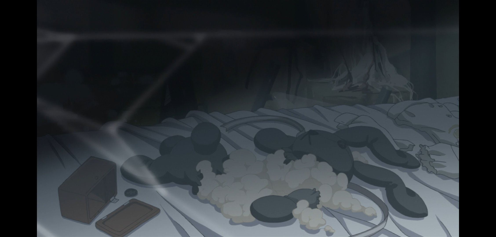

主要论据镇楼。
二楼自留。
本贴主要针对某些有意或者无意的带歪对缘之空的的理解的的错误言论，尽量采用官方事实和数据作为证据，将我对作品的理解与认识压到最低。
在开始讨论之前，大家先需要了解下背景，来对于我们今天讨论的问题有一个最基本的把握：
还是那些老话，众所周知缘之空原作gal是在08年12月5日发售的实妹系galgame，动漫是10年10月番（漫画过于冷门，而且与两边剧情都出入较大，所以不做讨论）。
游戏的剧情除了有点无聊之外没什么黑点，也没什么疑点，就是普通的一部水平比较高的作品。对于缘之空gal的热度这一点，虽然并没有很多人在讨论他（现在各gal贴吧哪怕提到实妹系gal或者各种跟缘之空相关的元素也很少有人提到缘之空，当然这可能也跟在国内缘之空的动漫热度比游戏要高，所以很多人把它看作动漫而不是游戏有关）看上去热度比较低，但是在最近的一年多里，缘之空接连出了三个手办，每年的挂画抱枕等等周边也是基本没有断过，对于一个半死不活好几年没出过新作的公司sphere来说，应该也足以说明缘之空的热度也不算特别低吧。
还是那些老话，众所周知缘之空原作gal是在08年12月5日发售的实妹系galgame，动漫是10年10月番（漫画过于冷门，而且与两边剧情都出入较大，所以不做讨论）。
游戏的剧情除了有点无聊之外没什么黑点，也没什么疑点，就是普通的一部水平比较高的作品。对于缘之空gal的热度这一点，虽然并没有很多人在讨论他（现在各gal贴吧哪怕提到实妹系gal或者各种跟缘之空相关的元素也很少有人提到缘之空，当然这可能也跟在国内缘之空的动漫热度比游戏要高，所以很多人把它看作动漫而不是游戏有关）看上去热度比较低，但是在最近的一年多里，缘之空接连出了三个手办，每年的挂画抱枕等等周边也是基本没有断过，对于一个半死不活好几年没出过新作的公司sphere来说，应该也足以说明缘之空的热度也不算特别低吧。
不知道偏颇指的是什么。。
不应该每个人看完有不同的体会吗。。
周边还更嘛。。今天中午刚去拜读的。。。
不应该每个人看完有不同的体会吗。。
周边还更嘛。。今天中午刚去拜读的。。。
2020-01-31 18:43 | 鳥之穹鳴:下面会讲到具体怎样才算偏颇，相信你看完之后你也会认为这是偏颇的2020-01-31 18:46 | 鳥之穹鳴:个人有个人体会当然是可以的，但是如果连官方都已经说明情况了，还有不同的体会，而且还特别信誓旦旦觉得自己才是对的，我认为我就需要开帖驳斥一下了2020-01-31 18:47 | 世界即我穹º:回复 鳥之穹鳴 :ok，不影响你更新了，我就等着吧qaq
讨论最多的也是争议最多的是缘之空动漫的部分。在中国，我相信妹系作品里缘之空说自己是第二，没人敢说自己是第一（不服的看下面百度指数对搜索量的统计还有各大萌战穹妹遇到别的妹系角色时的战况，比如说去年底的那个穹妹对和泉纱雾，差不多也就是七三分吧）。他的热度极高，延续时间极长，甚至可以说有哪部作品可以像这样，在所有部分在十年前就已经完结而且没有任何出任何形式的续作的希望的情况下还能保持这样的热度。对于缘之空的热度，虽然不能量化统计其原因，但根据我平时由我身边看动漫的同学们的聊天来总结，，我相信最大的两个原因，一个是尺度比较劲爆以至于相当一部分人都把它看做里番，一个是他是唯一一部（至少是唯一一部不算极其冷门的）哥哥可以和实妹正儿八经以恋人的形式在一起（还上了本垒）的非r18作品。
今天也是讨论尺度和剧情两方面的一些神论。
今天也是讨论尺度和剧情两方面的一些神论。
2020-01-31 21:00 | 空穹雨蒙蒙º:确实，缘之空十几年了穹妹的热度仍然不减，足矣说明其魅力了！很多妹番甚至可以说九成以上的番剧都是刚出那两年火，五年左右热度就降下来了，十年基本就无人问津了2020-01-31 21:43 | 德国骨科床位♂:那是当然，因为缘之空可以说是唯一真正描写兄妹感情和社会伦理的作品了，真的是无法被超越的经典佳作，可以说是名著了。2020-02-01 08:21 | 绫小路惠🎎:埃罗芒阿就是个弟弟，完全没有伏见司俺妹的感觉2020-02-10 04:56 | GUSTARF7:有理有据2020-02-11 16:59 | 最美的穹酱呀▫:永生所爱缘之空和穹妹2020-03-17 00:55 | 叛逆的鲁路修♤:现在的galgame不上实妹已经不是妹系作品了2020-04-03 17:06 | AA😈🌼:回复 德国骨科床位♂ :同感，抛开有色眼镜，缘之空神作无疑2020-05-05 01:46 | 💥珂学研究生💥:楼主百度指数在哪里看2020-07-05 12:54 | 贴吧用户_545XQZ2:他2020-07-18 18:22 | 天真珈百璃⚡:？
俺妹这是凉透了吗

所以这个帖子类似于我们提问，然后你来解答吗？
2020-01-31 19:00 | 鳥之穹鳴:不，主要是驳斥现在几个非常普遍的错误认识
不知道是谁的偏颇理论哟2020-01-31 19:29 | 鳥之穹鳴:不好意思刚才好像是友军误伤了？2020-01-31 19:31 | 风起苍岚影如幻:主要是最近智障太多，弄得我戾气有点大，实在不好意思
哦哦，我说怎么感觉不对劲..2020-01-31 19:33 | 风起苍岚影如幻:没事的哦
第二：缘之空是后宫番/悠是人渣
当然也是错误的。
首先不得不承认的是，作为一切galgame的通病，由于在后续剧情中需要选择不同的女主，所以在最开始的共通线中，一定是所有女生都或多或少都对男主有好感的，如果您把这个称为后宫番，那我倒是没话说，而且我也想不出acg还剩几个非后宫番了。
主要的问题都不是在这里，主要的问题是当时在电视播放的时候，feel.采取了一个比较迷的操作，那就是像galgame一样采取了分线剧情，每个女主分别有自己的个人线路，然而TV又不可能一条线一条线的播，因为前面的共通线都是同一集，不可能重复，为她选择了先播共通线再播个人线这种做法，直观上给人的感受确实就是悠每两集推一个妹子
但是事实绝对不是这样，人家还特别在每集前面加上名称，比如说S1S2S3,A1A2A3来区分，但我相信在看电视的情况下，没有多少人会注意到
所以各种后宫番人渣论就出来恶心人了，所以这只是不认真看番的人的误解而已，缘之空不是后宫作，悠也是从一而终的好男友，并不是人渣。
其实这都算客气得了，起码人家给你标明了是哪条线（虽然并不明显），写真女友或者灰色的果实那样的根本就不给你写。当然灰色三部曲从后续剧情来看某种意义上来说确实是后宫向了。
当然也是错误的。
首先不得不承认的是，作为一切galgame的通病，由于在后续剧情中需要选择不同的女主，所以在最开始的共通线中，一定是所有女生都或多或少都对男主有好感的，如果您把这个称为后宫番，那我倒是没话说，而且我也想不出acg还剩几个非后宫番了。
主要的问题都不是在这里，主要的问题是当时在电视播放的时候，feel.采取了一个比较迷的操作，那就是像galgame一样采取了分线剧情，每个女主分别有自己的个人线路，然而TV又不可能一条线一条线的播，因为前面的共通线都是同一集，不可能重复，为她选择了先播共通线再播个人线这种做法，直观上给人的感受确实就是悠每两集推一个妹子
但是事实绝对不是这样，人家还特别在每集前面加上名称，比如说S1S2S3,A1A2A3来区分，但我相信在看电视的情况下，没有多少人会注意到
所以各种后宫番人渣论就出来恶心人了，所以这只是不认真看番的人的误解而已，缘之空不是后宫作，悠也是从一而终的好男友，并不是人渣。
其实这都算客气得了，起码人家给你标明了是哪条线（虽然并不明显），写真女友或者灰色的果实那样的根本就不给你写。当然灰色三部曲从后续剧情来看某种意义上来说确实是后宫向了。
2020-01-31 19:15 | 世界即我穹º:这个属于审题错误吧。。。。2020-01-31 19:30 | 鳥之穹鳴:回复 世界即我穹º :本来谁都不想去理它们的，但是这几个错误认识的影响实在是太恶劣了，所以不得不开贴驳斥一下2020-01-31 21:01 | 空穹雨蒙蒙º:真是很坑呢，每次我都一个一个的解释都快累死了2020-01-31 22:22 | 战五张:悠人渣的还是埋了吧2020-02-01 13:16 | 米高扬-设计图:内个，抽楼了，第一没了2020-02-01 13:18 | 倾生一世只为你:主要还是动漫锅2020-02-04 08:06 | 灵虚🔯砚:我当初第一次看也这么认为
坑人2020-02-04 21:55 | 穹念永恆✨:诶，在这儿看你说的都是明白的，那些无知之人会看见吗2020-02-07 10:20 | s桑相-:唉，在QQ上都不知道和人解释过多少次了2020-02-07 13:32 | 98点24℉:每次看到那些所谓的资讯里面所谓的动漫男主渣男榜中出现悠哥都会蛮难受的。前段时间带一个朋友入宅，好说歹说才把他骗得看yzk。结果。。。 “这个番一看总觉得男主渣”2020-02-10 00:14 | 冰织ლ:我当初就是被别人骗了，说是后宫番才看缘之空的2020-02-10 04:57 | GUSTARF7:ntr番（？）2020-02-20 17:25 | 永星º灵:回复 s桑相- :这都能搞错吗？看动漫每集的衔接也差不多能搞懂吧2020-03-01 11:02 | gc35pº:灰色没问题 就是后宫 乐园里最后hs都是直接给你放的 共通线里也有hs果实没汉化就不清楚了2020-03-16 13:22 | 嘿苏笑shine:悠真的很负责任，很专一的，很温柔2020-03-19 11:01 | 孤觞233:回复 倾生一世只为你 :+12020-03-28 23:37 | 15862046466zby:确实烦，有些人看不懂还到处bb，都不会百度一下的2020-04-01 17:44 | 炎龍哥哥:第一遍看到时候我都懵了，女生集体失忆？后来才发现是类似平行宇宙的存在2020-04-01 19:10 | 鳥之穹鳴:回复 炎龍哥哥 :平行宇宙？不是说了不是平行宇宙吗？2020-04-01 19:33 | 炎龍哥哥:回复 鳥之穹鳴 :我知道不是平行宇宙，这是剧情线2020-04-01 19:53 | 鳥之穹鳴:回复 炎龍哥哥 :emmmm我看明白你刚才的话了……我理解错了不好意思2020-04-01 20:03 | 炎龍哥哥:回复 鳥之穹鳴 :没事，楼主辛苦了2020-04-03 02:40 | 小南紫乃♤:给别人推荐时候最大的问题就是这个了，他看完告诉我男主渣的时候我都想打开网盘给他看看各分线的标题o(︶︿︶)o 唉2020-04-16 07:22 | 衰小孩Ω:其实我不太理解为什么有人会以为这是后宫，每次开新线的时候剧情都有很明显的剧情跳转2020-04-23 12:05 | cyh哑巴吃汤圆:估计不理解的那部分人是快进看的2020-05-12 00:48 | 骏马wx奔驰:我们班同学对缘之空充满了偏见

附上对萌新发了无数次的观看顺序解说以及TV版截图，注意是TV版，人家feel.公司明明有好好的说明是分线剧情的
2020-02-05 16:49 | 霸权主义002号:对我来说缘之空只有5集2020-02-10 05:18 | -白琴里-:确实2020-02-17 11:17 | 我叫炽天使♤:都是12集的错，我看的17集屁事没有甚至搞清楚机制之后觉得有点慢。2020-02-29 13:02 | 小楚郑好帅啊:回复 霸权主义002号 :原来这么看，我说我咋这么蒙呢。2020-03-25 18:03 | ksc2333:大家自己看看2020-03-26 16:15 | 扎比瓦卡Ω:回复 霸权主义002号 :我也……是2020-04-06 16:44 | 吹进心底的风ლ:今晚我就重温一遍2020-05-23 11:59 | 贴吧用户_5NQZ5K3:回复 霸权主义002号 :同，其他都是伏笔铺垫，咳咳，唤醒男主对于穹妹的爱
大佬nb
第三个谬论，也是最近讨论的非常多的，甚至有相当多的人都在赞成的错误看法：悠穹其实在湖里淹死了。
刚才好像有友军误伤，不好意思主要是最近某些人的言论实在是我有点上头，本来想挂几个人在这儿的，后来想想还是算了吧。
下面我完全以官方的解释和客观事实为依据来讨论和解释，以免有人说我偏激。
刚才好像有友军误伤，不好意思
主要是最近某些人的言论实在是我有点上头，本来想挂几个人在这儿的，后来想想还是算了吧。下面我完全以官方的解释和客观事实为依据来讨论和解释，以免有人说我偏激。
不得不承认的是动漫最大的一个缺点之一就是它的篇幅太短。缘之空本来就算是比较长的gal，我记得我当时推用了20多个小时，然而动漫又在有限的12集内采取了分线式讲述，这就导致每一个女主都只能分到四集最多五集的剧情，连一个剧场版的时间都不到，根本讲不了太多剧情，比如说穹线把出去夏日祭和海边玩儿的各种剧情全都阉割掉了，再加上经费没有多么充分（看画面质量便知，虽然feel.不至于像A1,节操社那样做出惨不忍睹的画面崩坏，但是缘之空也是有很多画面质量不算很高，而且我做补帧的时候也发现他极不流畅，全程一拍三，有一个班长转身的动作，上一帧是班长后背，下一帧直接就是班长转过身来了），所以缘之空动漫有很多硬伤。
2020-02-01 12:28 | 風華▫恋:10年前2020-02-03 13:57 | Sora的笨蛋:对，是10年前2020-02-03 22:36 | 星陨曙光:十年前很牛逼的了2020-02-03 23:18 | 鳥之穹鳴:回复 風華▫恋 :他的画风个人认为在十年前几乎可以说属于超越时代，但是也不得不承认，他作画确实是偶尔会崩坏啊2020-02-04 08:07 | 灵虚🔯砚:十二年前的游戏比十年前的动漫画风好2020-02-09 23:34 | 梦之翼御用:不是动漫，只是动画，漫画版结局很明朗2020-03-01 11:06 | gc35pº:回复 灵虚🔯砚 :你这没必要比的，gal很大一部分是靠立绘吸引人的 这是gal最显而易见的特点 动画比不上游戏很正常的2020-03-05 16:47 | 半夜里咳嗽的狼:这个出版商叫feel吗?2020-03-05 17:45 | 鳥之穹鳴:回复 半夜里咳嗽的狼 :作缘之空的动画公司叫feel.，春物和月色真美也是他家做的2020-03-05 22:58 | 半夜里咳嗽的狼:回复 鳥之穹鳴 :就是最后那个奥木染啥内会是吗2020-03-06 00:04 | 鳥之穹鳴:回复 半夜里咳嗽的狼 :那个是制作组，就是feel.公司里负责这部番的人2020-03-06 13:44 | ◆感叹号◆:嘛，一拍三一拍二对于日本商业TV动画来说挺正常的，缘之空动画企划也不过是为了给原作打广告，也不是啥重要的地方2020-03-06 13:57 | 半夜里咳嗽的狼:回复 鳥之穹鳴 :有很多事想交流，方便留个联系方式吗？我今年高三2020-03-19 15:28 | -☞逍遥☜-:为什么我只花了2小时通关？其实先刷动漫游戏快进应该会快一点。。。。
最大的一处硬伤在穹线最后一集，也就是布偶的问题，家里有一个破损不堪的，但是火车上却又有一个完好无损的。这个好像确实无解，不知道是因为作画崩坏还是作者想通过这个来表达一些什么别的东西，我记得镇楼的那个画集里好像讲过这个，但是这本画集在我的学校里，等我到时候回去拿了看看吧。

2020-01-31 19:36 | 世界即我穹º:这个片尾曲动画里有暗示的qaq。。我也不太了解，感觉意思是别人在他们走了以后从窗户里打了个洞扔进去的？2020-01-31 23:09 | 無丶丶言-:撕破黑暗的过去，迎接新的未来（强行解释）2020-02-01 08:23 | 绫小路惠🎎:这个镜头太明显了，应该不是bug，感觉更想是有意为之2020-02-04 01:50 | 彭千瑞没有妹妹:两个方便换洗？2020-02-04 08:08 | 灵虚🔯砚:兔子不只一个（强行解释）2020-02-04 21:58 | 穹念永恆✨:悠又买了一个(强行解释)2020-02-06 17:12 | 南鸢白皙ლ:回复 彭千瑞没有妹妹 :你这句话差点让我喝水呛死2020-02-09 23:28 | 梦之翼御用:我也觉得至少有2个，穹一直带着兔子肯定要个换洗的啊……撕破的应该那个是悠送的，妈妈的不大可能去撕……我的话说不定会备3个，妈妈的珍藏，让哥送2个换着玩2020-02-09 23:31 | 梦之翼御用:而且左面的盒子很像是平时修补用的缝纫盒，都有备用的纽扣2020-02-17 11:19 | 我叫炽天使♤:家里的那个感觉是父母的方面的（毕竟是母亲给她的）2020-02-19 11:48 | 贴吧用户_Qa5yR7W:缝起来了2020-03-02 02:40 | 夜寒-酱:众所周知穹妹有无数个兔子2020-03-03 22:05 | 妄焉岺:悠和穹没死啦，兔子是不止一个的，有集穹看相册，在厨房悠旁边有一个，然后到房间又抱一个，说明兔子不仅仅只有一个。 然后说他们被淹死的，我最近又看了一遍，下载下来的比以前的全？我也不太清楚，悠找到穹的时候，上神社不是，在瑛屋子前发呆了一下，就是回忆，然后瑛听到动静出来了！2020-03-03 22:07 | 妄焉岺:回复 妄焉岺 :然后瑛喜欢悠不是，就算不知道是谁，肯定也要去看看的呀，然后家里她肯定熟悉，看到悠和穹溺水了肯定救了。还有说为啥不在上面扑腾的时候就救，拜托人家两兄妹搞，你肯定不能插手呀，然后看到他们掉下去，游过来也要时间，这个时候他们沉入水底是正常的2020-03-03 22:40 | 鳥之穹鳴:回复 妄焉岺 :只能说不排除这种可能性，但是不能因为不排除这种可能性就断定是瑛救的，奥康姆的剃刀了解一下2020-03-10 16:54 | 你好你好º-º:我一开始觉得撕兔子是想加剧紧张气氛，也暗示穹妹自己想摆脱过去，至于兔子为啥会在出现等等，只能说是最后一集的bug，但我觉得瑕不掩瑜2020-03-19 06:51 | lu15839582519:暗示他们被淹死，好像也说不通2020-03-21 18:02 | 阿天a-:回复 妄焉岺 :可以说一下哪一集吗？看完这部漫抑郁几天特意下了个贴吧2020-03-24 09:20 | 贴吧用户_a4RCNJX:有人认为他们死去不过两个依据：1两个兔子，2列车似乎开往了天堂，且车上没有其他人。2020-03-24 09:25 | 贴吧用户_a4RCNJX:有些人说兔子只有一个也是无语了，车上的兔子是虚像不行吗，那个画面就是一个意境不行吗？破的兔子象征过去，完整的兔子象征新的开始。2020-03-24 09:28 | 贴吧用户_a4RCNJX:那趟列车上可能还有其他人，但那不重要，他们的眼中只有对方，所以旁人被省略了，他们正驶向全新的天空，或者说结局那个画面本身就是个意境…这不是说的很通吗？为什么非得说是什么天堂列车呢？为什么总是有人意淫他们死了呢，见不得别人好？2020-03-24 09:38 | 贴吧用户_a4RCNJX:还有，那个兔子是旅途中买的不行吗？那些意淫别人死的智商低就算了，情商也低？突然死去接的上前面的情节？悠正要面对他们之间的感情，突然就去世？有病吧，这叫留白？留下什么了？禁忌的情感不得好死吗？耍什么悲伤的浪漫2020-03-24 09:42 | 贴吧用户_a4RCNJX:用脑子想一下，如果他们真的死去了，那悠来救穹的时候，穹的眼神会那么黯淡无光？那是她最爱的哥哥啊，就算他们死了，他们也一定会开心的一起赴死，穹会在最后连抱都不抱一下悠？她明显是在考虑些什么啊2020-03-30 14:54 | 002😍🌈:为啥啊有两个玩偶2020-04-01 22:19 | 墨紫啊-:所以就有人说悠和穹死了。。。。 有点难受，我当时还信了2020-04-03 07:09 | 不羁的心🍦:悠之空有说，兔子不止一个，妈妈买了很多2020-04-05 13:36 | 天若逍遥℉:回复 :说因为车上没有人就是开向天堂的只能说他记性有问题：因为第一集时他们坐的火车上好像也没有人，难道就能说他们从开头就是开向了天堂吗2020-04-06 00:06 | 金宝宝碗里来:？
回复 贴吧用户_a4RCNJX :我觉得会有这种说法是可以理解的。 如果只看过动画，没玩过游戏。 这里就可以这样理解：现实里容不下兄妹相恋，所以只能“去另一个世界”。 当然，这是建立在只看动画的前提下。2020-04-23 15:56 | EpicPantss:回复 妄焉岺 :看相册是哪一集的，能不能说一下，我再认真看一遍2020-05-19 15:22 | Glock_1999:回复 EpicPantss :复议 @妄焉岺2020-06-25 05:50 | 晓梦-曦:咦咦？难道恢复如初的兔子不应该是暗示他们恢复的感情么2020-07-04 00:22 | Asahi🌻:黑兔子贯穿整部动画，明明是个在游戏里可有可无的布偶，被高桥丈夫赋予了新的含义。 这里当然是动画的写意手法，侧面表达了两人的重新结合。2020-07-05 12:56 | 贴吧用户_545XQZ2:兔子能修（强行解释）
这只是一个争论倒也没什么，但是这个争论后来也发了更大也更离谱的一个言论，那就是悠穹其实在湖里已经淹死了，那后来是他俩在去往天国的列车上。
2020-01-31 19:46 | 风起苍岚影如幻:哈，我记得那个贴，那个楼主真是神奇的脑回路2020-01-31 20:47 | ◎有故事的滑稽:感觉每隔一段时间就会有人开贴说这个2020-01-31 22:39 | 零碎的你º:我他🐴也很疑惑这是什么想法2020-02-02 16:32 | 鳶尾芊緣妹º:回复 ◎有故事的滑稽 :sb的刷新也是需要时间的2020-02-02 16:32 | 鳶尾芊緣妹º:回复 ◎有故事的滑稽 :这也说明穹妹的魅力强大2020-02-04 22:05 | 穹念永恆✨:sphere和cube出的游戏哪有悲剧2020-02-07 10:26 | s桑相-:这好离谱呀2020-02-28 15:24 | 燚龘虾🔥:我感觉就是动漫的bug，嗯嗯！2020-03-01 11:09 | gc35pº:你直接吧悠之空拍他脸上不就行了2020-03-01 11:11 | 鳥之穹鳴:回复 gc35pº :我认为动漫相比游戏还是做了比较大的改动的，不能把动漫的剧情和游戏的剧情直接等同2020-03-01 11:13 | gc35pº:回复 鳥之穹鳴 :嗯看到楼下了2020-04-01 19:14 | -回忆的幽灵-:***直呼**2020-04-18 17:19 | 🐶🐶doge:离谱?2020-05-05 14:58 | 秒速五厘米🌊:2020-07-20 04:16 | 贴吧用户_Qy69AC9:还天国列车...简直拉低傻子们的智商
“悠和穹就是死了，我就是这么觉得”
-
理解不同，认为应该从另一个角度理解（X）
不知道出于何种奇怪心理就是喜欢看悠穹去死（√）
-
理解不同，认为应该从另一个角度理解（X）
不知道出于何种奇怪心理就是喜欢看悠穹去死（√）
2020-01-31 19:38 | H-F◎曲终:多多少少都沾点心里阴暗（√）2020-01-31 19:40 | 鳥之穹鳴:说的太对了，有些人就特别喜欢黑深残的作品2020-01-31 21:14 | begin1902:要是都死不就算升华嘛 参考梁祝 罗密欧 都是以一个悲剧来升华主题 ps：虽然我不知道用在本作合适不合适. 但是持此观点的人大多数应该是这样想的吧2020-01-31 21:46 | 德国骨科床位♂:回复 begin1902 :某些人喜欢看悲剧，那我建议他们去看鲁迅，骆驼祥子。2020-01-31 22:16 | 鳥之穹鳴:回复 begin1902 :所以说其实是他们个人的癖好影响了他们对作品的看法。不得不承认，大多数时候最优秀的悲剧确实是比最优秀的喜剧要更有艺术价值的，但是人家已经写出喜剧来，还要抢先解读成悲剧，这就是迷惑行为了2020-02-02 16:33 | 鳶尾芊緣妹º:回复 begin1902 :呵呵，死啦还升华你妹啊！！！2020-02-02 16:37 | begin1902:回复 鳶尾芊緣妹º :悲剧刻画更深刻一些 但是本作没有那么深的含义罢了2020-02-02 17:31 | 鳶尾芊緣妹º:回复 begin1902 :本来就是一部缺钱制作，人物设定好，何必比来比去？有意思？2020-02-02 18:58 | begin1902:回复 鳶尾芊緣妹º :我没比啊2020-02-10 15:36 | 鳶尾芊緣妹º:回复 GUSTARF7 :。|墙|ｮﾟｪﾟ；)|墙|。2020-02-10 23:46 | GUSTARF7:回复 鳶尾芊緣妹º :抱歉抱歉，发错人了2020-03-11 17:40 | 雪之下八幡▫-:建议隔壁宫吧隔离2020-03-16 01:45 | shadow_sunset:我没收住刀…快给他披上敌军的衣服！2020-03-21 18:06 | 阿天a-:回复 德国骨科床位♂ :结局到底是什么啊？看完这部番心情难受好几天 特意下个贴吧又说死了又说没死2020-03-21 18:09 | H-F◎曲终:回复 阿天a- :happy end2020-03-21 18:10 | H-F◎曲终:回复 阿天a- :没死，官方明确了2020-03-21 18:13 | 阿天a-:回复 H-F◎曲终 :嗯 谢谢了2020-03-21 18:17 | 阿天a-:回复 H-F◎曲终 :还有个问题就是他们最后咋从湖里出来的呢2020-03-21 18:23 | H-F◎曲终:回复 阿天a- :穹会游泳2020-05-14 09:38 | 明天再走º:回复 begin1902 :因为死了就不会痛苦了2020-05-30 22:09 | 鱼鱼鱼鱼鱼鱼♀:哈哈哈哈哈哈哈哈哈哈哈哈哈哈szdszd2020-06-28 22:08 | 月下残影moon:语文课代表表示骆驼祥子是老舍的 回复 德国骨科床位♂ :2020-06-30 15:03 | 乌拉那拉氏柔则:对啊，一看就是兄妹二人离开了小镇，后面奈绪还有瑛那一波人的话说的很清楚了。我觉得这部番之所以经典有一个原因就是最后悠穹在一起了，不然还是没有打破世俗的眼光。回复 鳥之穹鳴 :

现在我就来压下戾气，理性的讨论讨论这个问题。
他们的论据无非就是那只兔子，但我之前也说过，缘之空其实算一部低成本作品，那个兔子真的有可能是作画崩坏或者作者想表达一些观点，（具体是哪种情况我给忘了，回头补上）
我甚至之前还见过一种神论，居然说给一叶发的那个消息其实是奈绪替悠穹发的因为后来讨论悠穹的时候她表情微妙。
？？？？？
？？？？？？？？？？？？
毕竟人家兄妹俩都已经远走他乡，并且后来杳无音信了，您认为该摆出什么样的表情才合适呢？
出于隐私问题我就不往外挂人了
他们的论据无非就是那只兔子，但我之前也说过，缘之空其实算一部低成本作品，那个兔子真的有可能是作画崩坏或者作者想表达一些观点，（具体是哪种情况我给忘了，回头补上）
我甚至之前还见过一种神论，居然说给一叶发的那个消息其实是奈绪替悠穹发的因为后来讨论悠穹的时候她表情微妙。
？？？？？
？？？？？？？？？？？？
毕竟人家兄妹俩都已经远走他乡，并且后来杳无音信了，您认为该摆出什么样的表情才合适呢？
出于隐私问题我就不往外挂人了
2020-01-31 19:47 | H-F◎曲终:阴谋论无处不在2020-02-02 16:12 | 贴吧用户_537GMt6:远走他乡 杳无音信说的有点过吧只是去旅行又不是不回来了，而且奈绪不是知道他们去国外旅行的事吗2020-02-02 16:34 | 鳶尾芊緣妹º:回复 贴吧用户_537GMt6 :别问，问就是去玩游戏2020-02-02 16:37 | 贴吧用户_537GMt6:回复 鳶尾芊緣妹º :游戏里就是这样说的 去芬兰是旅行没说是定居 悠穹是突然外出要奈绪来处理后事奈绪肯定知道他们外出是去旅行啊2020-02-02 17:37 | 鳶尾芊緣妹º:回复 贴吧用户_537GMt6 :GoodEnding别想了2020-02-02 20:42 | 贴吧用户_537GMt6:回复 鳶尾芊緣妹º :我知道是悠哥为穹妹戴上戒指的GOOD END但是楼主“远走他乡，杳无音信”这词明显用的不妥啊2020-02-02 21:32 | 鳥之穹鳴:回复 贴吧用户_537GMt6 :旅游那是galgame好不好，动漫就是说在北欧生活了，也有说过最后音信全无，哪里有什么不对吗2020-04-17 02:13 | 秋少了:这很明显就是祝福的表情，看不出来?他们没脑子?笑死
当然，一部动漫、一个分镜并不一定会有多深的含义，所以我们单看画面来讨论的话实际上是得不出任何有说服力的结果的，毕竟可以从各种角度来理解。
所以我下面搬出一个决定性的论据，那就是官方怎么讲。
所以我下面搬出一个决定性的论据，那就是官方怎么讲。
镇楼的是11年动漫放送完毕之后发售的数量限定生产版BD Box，里面的穹线附带的小册子里有对剧情和分镜的简单介绍。
我截取穹线最后一集的页面照张相。
我截取穹线最后一集的页面照张相。
2020-01-31 19:57 | 唔皇无敌😜:这个打码什么鬼2020-01-31 19:58 | 唔皇无敌😜:我付滑稽币私发可以吗2020-02-02 16:36 | 鳶尾芊緣妹º:哈哈哈，如果有孩子那堕掉就好了.2020-02-02 22:57 | 蓝色的兔耳朵:回复 鳥之穹鳴 :这个好啊，感觉买不到了吧2020-02-03 00:07 | 鳥之穹鳴:回复 蓝色的兔耳朵 :这玩意烂大街了，我还有好几套挂在闲鱼上2020-02-03 12:38 | 蓝色的兔耳朵:回复 鳥之穹鳴 :多少钱这个2020-02-04 08:11 | 灵虚🔯砚:回复 蓝色的兔耳朵 :22000日元2020-02-04 09:54 | 鳥之穹鳴:回复 灵虚🔯砚 :你说的那是初回限定版，数量限定生产版当时原价就36000日元2020-02-06 00:39 | 贴吧用户_7NM34JP:回复 鳥之穹鳴 :都是日文看得懂吗2020-02-06 17:15 | 南鸢白皙ლ:回复 贴吧用户_7NM34JP :手机自带智慧识屏2020-02-06 17:16 | 南鸢白皙ლ:回复 鳥之穹鳴 :36000日元折合人民币多少钱2020-02-06 17:20 | 鳥之穹鳴:回复 南鸢白皙ლ :百度两分钟的事2020-02-06 17:24 | 南鸢白皙ლ:回复 鳥之穹鳴 :以后我去日本旅游，我拿1万RMB够吗2020-02-06 17:27 | 鳥之穹鳴:回复 南鸢白皙ლ :那得看你去几天，一般来讲是不够的2020-02-06 17:28 | 南鸢白皙ლ:回复 鳥之穹鳴 :2020-02-07 13:42 | 98点24℉:回复 南鸢白皙ლ :1w软妹币住哪？2020-02-07 19:23 | 南鸢白皙ლ:回复 98点24℉ :

个人评论(不喜勿喷)
本人先看的动漫，也没用专业眼光，但分线这种一眼就看出来了好吧，看了动漫才晓得有游戏。本来想手机上推，找了好久实在忍不住用办公室电脑下载，没过几天就被发现了(老板手段极其残忍)。说实话动漫改的确实有点多，个人觉得有些改的不好，比如说穹线班长奈绪去悠家那段感觉改崩了。结局倒没什么问题，毕竟是动漫
本人先看的动漫，也没用专业眼光，但分线这种一眼就看出来了好吧，看了动漫才晓得有游戏。本来想手机上推，找了好久实在忍不住用办公室电脑下载，没过几天就被发现了(老板手段极其残忍)。说实话动漫改的确实有点多，个人觉得有些改的不好，比如说穹线班长奈绪去悠家那段感觉改崩了。结局倒没什么问题，毕竟是动漫
2020-02-02 16:37 | 鳶尾芊緣妹º:记得锁门2020-02-05 16:42 | 霸权主义002号:2020-02-07 13:44 | 98点24℉:我想知道这个社会有多残忍2020-02-22 01:40 | 吃肉的大飞馕♂:回复 鳶尾芊緣妹º :我也有这个问题，为什么他们都不锁门？难道没有锁？？？？ 黑人问号.JPG2020-03-09 08:05 | 光速飞行肥泥鸡:回复 吃肉的大飞馕♂ :可能老板不让锁2020-04-30 10:42 | 恢复重建吃饭:回复 吃肉的大飞馕♂ :你想想悠穹在学校校医室那一段才绝呢（悠之空 ）2020-06-24 18:27 | 向往悠远天穹:回复 恢复重建吃饭 :那个就离谱2020-06-24 19:09 | 鳥之穹鳴:简直是光天化日之下飙车
回复 向往悠远天穹 :galgame常有操作，万华镜的姐弟还和同学隔着一层玻璃墙ghs呢2020-06-30 15:07 | 乌拉那拉氏柔则:回复 向往悠远天穹 :是游戏里吗2020-06-30 19:56 | 向往悠远天穹:回复 乌拉那拉氏柔则 :对，悠之空。2020-07-05 12:58 | 贴吧用户_545XQZ2:回复 吃肉的大飞馕♂ :乡下民风淳朴
可怜我班长背锅
2020-01-31 20:07 | 鳥之穹鳴:班长是动漫里最人设恶心的，也是最惨的，动漫制作组非得叫她一个人唱黑脸2020-02-03 11:03 | 龙与凤凰🔯:班长代表大众正常看法嘛。动画里班长很萌很花痴，可惜落花有意流水无情。2020-03-19 11:06 | 孤觞233:回复 龙与凤凰🔯 :悠之空好像有班长线吧2020-04-24 07:46 | 曲一线什么线-:回复 孤觞233 :动漫后面小剧场好像也是？？？2020-04-24 22:10 | 孤觞233:回复 曲一线什么线- :那个是初佳线2020-04-24 22:50 | 曲一线什么线-:回复 孤觞233 :哦哦哦2020-04-30 10:43 | 恢复重建吃饭:回复 龙与凤凰🔯 :我觉得萌的人设不明显，游戏里的班长非常拔啊不管是悠之空里面的班长线还是穹线
不过动漫也对悠的人设进行了补充，说实话还行
2020-04-30 10:43 | 恢复重建吃饭:游戏里每次看到悠没配音的画面我都尴尬癌
硬 核 打 码
可以看到对那一段淹在湖里的剧情也有比较详细的文字解释。
照顾到不会日文的吧友，我把原文打在这里：
一度は、穹と共にこの世から消えこのも考えただるぅ悠。その体験が彼に、その後の人生を決めさせたのかもしれない。なっなひとっの、大切なものを守るために
百度翻译和谷歌翻译我都试了，不怎么好用，虽然我没怎么学过日语，但是还是在这里渣翻一下：大意是“（画面里是）一度有‘要和穹一起在这个世界上消失’这种想法的悠。在有了这种体验之后，这种体验或许决定了他以后人生的抉择，也就是保护对自己最重要的事物”，而这也是和动漫里的台词可以相对应的。
所以说官方的立场很明确，就是悠穹只是普通的挣扎回了岸上并且活了下来，然后继续了以后的生活而已。
个人倒是认为不应该用游戏的剧情来解释动漫，因为动漫相对于游戏来说剧情改动已经算是比较大的了，尤其是穹线后半部分，所以并不一定带有参考性，还是动漫官方给的这个解释比较有说服力
照顾到不会日文的吧友，我把原文打在这里：
一度は、穹と共にこの世から消えこのも考えただるぅ悠。その体験が彼に、その後の人生を決めさせたのかもしれない。なっなひとっの、大切なものを守るために
百度翻译和谷歌翻译我都试了，不怎么好用，虽然我没怎么学过日语，但是还是在这里渣翻一下：大意是“（画面里是）一度有‘要和穹一起在这个世界上消失’这种想法的悠。在有了这种体验之后，这种体验或许决定了他以后人生的抉择，也就是保护对自己最重要的事物”，而这也是和动漫里的台词可以相对应的。
所以说官方的立场很明确，就是悠穹只是普通的挣扎回了岸上并且活了下来，然后继续了以后的生活而已。
个人倒是认为不应该用游戏的剧情来解释动漫，因为动漫相对于游戏来说剧情改动已经算是比较大的了，尤其是穹线后半部分，所以并不一定带有参考性，还是动漫官方给的这个解释比较有说服力
2020-02-02 16:39 | 鳶尾芊緣妹º:动漫里悠以为穹想自杀，结果穹会游泳……2020-02-04 01:54 | 彭千瑞没有妹妹:缘之空op里面出现了从湖底突然上升的画面，不知道这是不是暗示神(？)救了他们2020-02-06 17:17 | 南鸢白皙ლ:回复 彭千瑞没有妹妹 :好像某位大佬说这是悠和穹去的地方2020-02-10 00:21 | 梦之翼御用:一度想过和穹从这个世界消失的悠，在有了那种体验之后，也许就能决定之后的人生了——为了守护唯一重要的东西2020-02-10 01:51 | 鳥之穹鳴:回复 梦之翼御用 :不是想要，是以为吧2020-02-10 22:17 | 梦之翼御用:回复 鳥之穹鳴 :2020-03-19 15:32 | -☞逍遥☜-:没有“想要”啊？和穹一起从这个世界消失，漏打了……
如果在湖里死了上岸后的一发怎么解释？2020-03-31 00:51 | 安城旧人🌌:反正游戏里面是穹说她听见了悠在淹死前说了一句“救救我”然后让穹感觉悠需要她 而不是她连累悠 然后应该是穹把悠救了
emmm，大佬生气了？专门弄个解答贴
2020-01-31 20:08 | 鳥之穹鳴:生气倒是没有特别生气，主要是发现最近舆论导向都已经开始走歪了，所以觉得必须要整一个帖子来纠正一下
所以说悠穹其实在湖里淹死了这个谬论，要么是那些人天天的就喜欢搞阴谋论，要么就是他们只是单纯的喜欢黑深残这种题材。
虽然说动漫缘之空的基调相比游戏来说压抑了很多，但总体上来讲也是在向着happy ending走的，根本不可能出现这种黑深残的剧情。
所以这里建议，如果看到这句话的诸位有谁还是认为悠穹淹死了，那缘之空不适合您观看，建议您去看冈田麿里或者虚渊玄的作品。
对对对，就是小圆或者团长的那种 宝石之国什么的也可以哦
宝石之国什么的也可以哦
虽然说动漫缘之空的基调相比游戏来说压抑了很多，但总体上来讲也是在向着happy ending走的，根本不可能出现这种黑深残的剧情。
所以这里建议，如果看到这句话的诸位有谁还是认为悠穹淹死了，那缘之空不适合您观看，建议您去看冈田麿里或者虚渊玄的作品。
对对对，就是小圆或者团长的那种
宝石之国什么的也可以哦
2020-02-01 09:43 | Reki雷姬º:团长迫害诉讼2020-02-01 13:32 | 犬子加冕为王🐶:不要停下来啊2020-02-02 16:41 | 鳶尾芊緣妹º:fate/zero2020-02-03 12:24 | Minecraft_凋零:你推荐这些东西2020-02-11 20:32 | djxxhxd:见腿识诚2020-03-01 19:50 | 悠远于天穹🌌:本来我只看了动漫，也这么觉得，特别是兔子的问题我看了几遍，还好有楼主的解答2020-03-01 19:57 | 鳥之穹鳴:回复 悠远于天穹🌌 :兔子那个官方好像没有给出明确的解释，也不清楚具体是什么原因，当然也有可能穹是像我一样的重度宅，什么东西都留一份传教一份收藏一份日用2020-03-01 20:05 | 悠远于天穹🌌:回复 鳥之穹鳴 :😂不愧是奆佬，话说缘之空有没有什么书籍之类的。就算是画册也好2020-03-01 22:14 | 鳥之穹鳴:回复 悠远于天穹🌌 :有，动漫游戏各有一本画集2020-03-02 10:09 | 悠远于天穹🌌:回复 鳥之穹鳴 :噢噢好的谢谢2020-03-31 15:52 | Novz▫:回复 djxxhxd :你笑诚哥死得早，诚哥笑你日得少2020-04-04 18:32 | 总体象棋◆:回复 鳥之穹鳴 :其实说实话，说被淹死了的真的和那兔子有很大关系，就连我现在都很懵，怀疑他俩在沉下去的时候都没有选择自救永远在一起，结尾象征着重生暗示着死亡，那个湖毕竟还有重置人生的标志性寓意2020-04-09 17:43 | 月满壶哀满觞🍁:回复 总体象棋◆ :我记得片头曲里有一幕（一分钟整）就是二人从湖底升上来的，这是官方暗示吧，本来可以拍进去的但没做完就放在片头当彩蛋了2020-04-18 23:56 | 贴吧用户_5AG75J6:回复 鳥之穹鳴 :幸运星的老梗（此方awsl）2020-04-23 20:08 | 943843238:这不是纯粹的糖系gal吗,我入宅的时候就是这一部,后面玩了很多gal都比这个黑暗,如果这个也能和黑深残扯上一点关系就真见鬼了.2020-05-14 22:04 | 清冷的猫ლ:第一次看觉得没什么，后来里面看了寒蝉鸣泣之时，再回头看几遍，顿时怕了2020-05-15 14:40 | qwer接df:回复 清冷的猫ლ :能看寒蝉的是比我狼的狼灭
怎么可能会认为两人死了呢 难以理解，不过动画没说清楚他们是怎么上来的真的是一大缺陷
难以理解，不过动画没说清楚他们是怎么上来的真的是一大缺陷
难以理解，不过动画没说清楚他们是怎么上来的真的是一大缺陷
2020-01-31 21:41 | 唔皇无敌😜:游戏也没说啊2020-02-01 02:21 | 💥💥高大德:回复 唔皇无敌😜 :游戏里是穹把悠救上来的啊2020-02-01 12:06 | 唔皇无敌😜:自己就跳了，两个人就在岸上了，然后就h了2020-02-02 05:44 | 云影夜纱:悠不会(不敢)游泳，穹会游泳啊2020-03-03 22:37 | 鳥之穹鳴:什么东西都讲明白的话，那这作品就已经完全没有任何看头了不是，还是要留白的2020-04-04 18:34 | 总体象棋◆:主要是那兔子，要不是兔子我也不会怀疑他俩死了2020-07-05 13:01 | 贴吧用户_545XQZ2:回复 唔皇无敌😜 :人类迷惑行为，这个窍开得太快力
唯一不喜欢这尺度的人群可能就是那些圣母表，那些特别喜欢站在道德的制高点评论别的东西下作的人了吧。只能说每个人对不同题材的耐受程度不同吧，也不能强求人家。
作为小吧，我也在这里给大家提个建议，希望以后尽量不要倒这样的垃圾，那些因为这点事就来黑缘之空的人不配进入我们的视野。
作为小吧，我也在这里给大家提个建议，希望以后尽量不要倒这样的垃圾，那些因为这点事就来黑缘之空的人不配进入我们的视野。
2020-01-31 23:13 | 书迷汤某某:噗一般黑缘之空的人跑到我们这吧是来找骂还是引战啊2020-01-31 23:47 | H-F◎曲终:回复 书迷汤某某 :怎么能乱伦？正义的我不能坐视不管了.jpg2020-01-31 23:57 | 书迷汤某某:回复 H-F◎曲终 :好吧我忘了还有没事找事的圣母婊...谢谢友君提醒2020-02-01 00:13 | H-F◎曲终:回复 书迷汤某某 :这不是圣母，这怕就是见不得别人好。圣母还知道恋爱是自由的呢。2020-02-26 22:19 | 悠远的苍穹-1:唉知乎
dalao还是dalao
片尾曲。
＋3
＋3
2020-03-06 22:20 | RayRay🍼:就是说奈姐把哥俩救回来了2020-03-06 22:24 | 鳥之穹鳴:回复 RayRay🍼 :只能说有这种可能，原作没有任何相关解释，设定集也说的很模糊2020-03-09 22:33 | 泷泽朔太郎℃:弱く问一下，从哪里来的有日文字幕？正式的１２话有日文字幕吗？2020-03-09 22:37 | 世界即我穹º:回复 泷泽朔太郎℃ :只是歌曲有日文字幕2020-03-10 00:10 | 鳥之穹鳴:回复 泷泽朔太郎℃ :只有op和ed有日文歌词，正剧里没有的

制作组自己吐槽自己。。。
其实我感觉如果按多线的话制作成二十五集应该是差不多。太长了容易臭，太短了情节衔接很麻烦……
2020-02-02 16:43 | 鳶尾芊緣妹º:兄***常可以多做点2020-05-16 22:43 | 跟我来呀😘:问题是没有钱啊
确实无法理解悠穹逝去的论点，强行制造悲剧不可取，我特地回去看了一遍最后一集，根本不存在那种氛围，退一万步说，两个相爱之人最后因为一丝懦弱的想法就BE到底哪里幸福哪里浪漫了。以及吐槽一下feel.既然有余裕做小剧场为什么不多给个一两分钟画一下悠背着穹走下山的那一幕呢，老朽看的时候可是非常期待这个镜头的啊，这么美的一张CG都不够格入镜么。2020-01-31 21:10 | ✨悠遠的苍穹✨:有道理2020-01-31 21:12 | 风起苍岚影如幻:时长啊...要拍下山还得再费点时间延续2020-01-31 21:28 | 桂坡-青木:回复 风起苍岚影如幻 :2020-02-17 12:07 | homeguojialong:硬生生用小剧场来讲女仆线不正是“制作组的人力物力已经紧张到只能用悲剧来形容”的铁证么2020-02-17 12:50 | 鳥之穹鳴:回复 homeguojialong :也不一定吧，毕竟也有集数问题，季番撑死了也就十三四集，如果要压五条线的话那更短了，小剧场用心做的本来就没几家，连京阿尼都是静画配音2020-02-17 12:50 | 鳥之穹鳴:回复 homeguojialong :不过缘之空制作预算不高这是很明显能看出来的2020-03-21 10:39 | 贴吧用户_QVRDUU4:求CG
大佬nb
大佬nb
bdbd
大佬nb
每次都有人问，这下好了
不是德国骨科关心他们么
2020-01-31 23:19 | 书迷汤某某:欢迎...9键打错了
大佬这帖子在缘之空吧里的人大部分都知道动漫是黑的，完全跟游戏里的单一结局不一样啊，你只能和没玩过游戏的人解释啊
大佬真的强
瞎吉尔乱说双结局，把悠之空推一遍哪来那么多破事gal是本体TV是衍生物
gal是本体TV是衍生物我一开始也觉得他们死了，原因倒不是那只兔子，而是穹根本没有办法在穿着长裙，留这长发的情况下把悠从那么深的水里捞出来。不过动画都这么说了，那就这样吧
2020-02-01 03:09 | 鳥之穹鳴:确实本来二次元就不一定是真实或者合逻辑的，如果没别的事的话，多讨论讨论也就无所谓了，但是既然官方都已经做出过明确的解释了，我还在这里展示了，我认为大家就应该按照官方的理解，我刚才看见的那个还在这栋楼里四处带节奏的某些憨憨就真的是不知道想干什么了2020-02-06 00:46 | 贴吧用户_7NM34JP:回复 鳥之穹鳴 :官方给的结论是活着的吗2020-02-06 02:22 | 鳥之穹鳴:回复 贴吧用户_7NM34JP :废话，我楼上给了翻译2020-03-03 22:12 | 妄焉岺:是瑛救的，我一遍遍翻贴对所有人都这么说道2020-03-03 22:35 | 鳥之穹鳴:回复 妄焉岺 :只能说不排除这种可能性，但是你不能说因为不能完全排除这种可能性就说是她救的2020-03-07 11:07 | 怪物少年Sakura:回复 鳥之穹鳴 :瑛作为巫女 自然有些超自然力量（猫爪占卜） 而且已经察觉到了悠 哪怕觉得没人不会出去看一圈吗？一个人住那么无聊 周围散步看到也很正常a2020-03-07 15:57 | 鳥之穹鳴:回复 怪物少年Sakura :你还真信那是超自然力量啊2020-03-07 15:58 | 鳥之穹鳴:回复 怪物少年Sakura :奥康姆的剃刀了解下，没有必要不能随便乱加戏2020-03-15 04:01 | 潇哥哥◆:不是她救的拍悠站在她房间外面那部分干嘛2020-03-15 09:44 | 鳥之穹鳴:回复 潇哥哥◆ :那照你说的，给个镜头就有可能了？那我还说是班主任救的呢
这几年舆论不一直掌握在游戏党手上 动漫里也我认为没有死，但那个沉水法太夸张和游戏还有点区别，所以我一直站的是叉依姬神。这是个小党派当年就不在战争中心现在更不在
动漫里也我认为没有死，但那个沉水法太夸张和游戏还有点区别，所以我一直站的是叉依姬神。这是个小党派当年就不在战争中心现在更不在
动漫里也我认为没有死，但那个沉水法太夸张和游戏还有点区别，所以我一直站的是叉依姬神。这是个小党派当年就不在战争中心现在更不在2020-02-01 00:29 | 神之殤99:合理耶
dd
🐮🍺
缘之空在日本火吗
2020-02-01 01:56 | 龙与凤凰🔯:应该不火，但生命力强2020-02-04 01:57 | 彭千瑞没有妹妹:这次去日本问过当地的初中生，都不知道，但总觉得做了坏事2020-03-28 14:41 | WEIZQ♂:回复 彭千瑞没有妹妹 :不要问，我初三的时候问同学谁知道缘之空，结果好几个男同学没一个知道的2020-03-28 14:41 | WEIZQ♂:回复 彭千瑞没有妹妹 :但到了高中他们就什么都知道了2020-03-29 02:37 | 彭千瑞没有妹妹:回复 WEIZQ♂ :他们好像接触我们看的动漫轻小说什么的都不多2020-07-05 13:03 | 贴吧用户_545XQZ2:回复 WEIZQ♂ :你们初中不行啊2020-07-12 20:45 | 呵呵金骏马:现在初中生知道的好像很少了2020-07-13 07:33 | 今天你氵了吗-:回复 呵呵金骏马 :那不会的，估计是b站梗小鬼多了，我们这很多人都知道。但是仅限于知道
我不关心剧情，我诚实，我馋身子
👴🏻忍某些人很多次了，今天实在受不了了，挂出来@龙与凤凰🔯
有些作品，比如说《School days》各角色人名暗指上世纪一些日本著名政客，比如姜文的民国三部曲，几乎是明摆着在向历史致敬，这样的作品解读解读倒是对的，《缘之空》没有这些元素 就是一部很普通的质量比较好的动漫，过度解读什么呢？一天天的玩阴谋论很爽是吧？
合着feel.就是个画动画的，他跟您比懂个P的缘之空对吧？
我都把动漫官方的说法原样搬出来了，您还搁那儿又是双结局又是暗示又是象征的呢？自己给自己加戏不累吗？接受一下制作组的原意那么难吗？还挨层楼回复，我是不是该怀疑怀疑您是不是别有用心了？
你以为我开这个帖子是为了谁的？
有些作品，比如说《School days》各角色人名暗指上世纪一些日本著名政客，比如姜文的民国三部曲，几乎是明摆着在向历史致敬，这样的作品解读解读倒是对的，《缘之空》没有这些元素 就是一部很普通的质量比较好的动漫，过度解读什么呢？一天天的玩阴谋论很爽是吧？
合着feel.就是个画动画的，他跟您比懂个P的缘之空对吧？
我都把动漫官方的说法原样搬出来了，您还搁那儿又是双结局又是暗示又是象征的呢？自己给自己加戏不累吗？接受一下制作组的原意那么难吗？还挨层楼回复，我是不是该怀疑怀疑您是不是别有用心了？
你以为我开这个帖子是为了谁的？
2020-02-26 22:25 | 悠远的苍穹-1:其实也没必要的喜欢的会自然喜欢的
本来在虚拟世界里找真实的人，一定脑子有问题，一个剧情一个画面也可以有多种解法，讨论讨论无可厚非，但是既然人家官方已经给出这段剧情的解释了，我也把他在这里告诉大家，我就希望以后某些人讨论讨论阐述自己的想法可以，但是不要再乱带节奏了
这种讲法，和那些傻 逼营销号说《西游记》里真假美猴王打死的那个其实是真孙悟空，或者侦探柯南最后的大boss其实是小岛元太，或者说哆啦A梦只是大雄作为一个臆想症患者做的梦的傻 逼言论有区别吗？你自己能说服你自己吗？
这种讲法，和那些傻 逼营销号说《西游记》里真假美猴王打死的那个其实是真孙悟空，或者侦探柯南最后的大boss其实是小岛元太，或者说哆啦A梦只是大雄作为一个臆想症患者做的梦的傻 逼言论有区别吗？你自己能说服你自己吗？
2020-02-01 11:21 | 唔皇无敌😜:西游记这个就有点扯了2020-02-26 22:22 | 悠远的苍穹-1:阿虚2020-04-01 09:14 | 中村吐司🔯:2020-07-05 13:06 | 贴吧用户_545XQZ2:一千个读者心中有一千个哈姆雷特，没有绝对的对错，没有必要把自己的看法强加于他人之上，对方提出一种可能性，没有下定论，就没有必要喷2020-07-05 13:28 | 鳥之穹鳴:回复 贴吧用户_545XQZ2 :要真只是提出一种可能性我也不至于以这么正式的态度发这么一个帖子还被大，而且吧置顶了，我发帖子的那几天有好几个nt见人就说他俩死了，你跟他理论他还振振有词2020-07-05 13:30 | 鳥之穹鳴:回复 贴吧用户_545XQZ2 :哪怕是完全不考虑原设定，也不考虑剧中的细节，非要觉得两人死了，我也不想多说什么，我也不想多加干涉，怎么理解作品我管不着也不想管，但是跳出来带节奏那就完全是欠收拾了2020-07-05 13:34 | 鳥之穹鳴:回复 贴吧用户_545XQZ2 :我发这个帖子也只是想遏制一下当时的那个风气并且给出官方解释到底是什么样子，好让大家心里有数，也并不是说非得让所有人都按照我的理解，虽然所有的看这部作品比较多的吧务都是一样的理解
感觉动画就是扯淡，还是游戏好玩
2020-06-16 20:51 | 向往悠远天穹:踩一捧一可不是什么好事哦，没有动画缘之空能在国内有这热度？功大于过，带点脑子吧。2020-06-18 22:23 | ◎用户名º-º:兄弟此话有失偏颇，不敢苟同2020-07-05 13:07 | 贴吧用户_545XQZ2:回复 向往悠远天穹 :说实话，galgame这一品类的热度有一定部分就是这类动画炒上来的2020-07-05 13:29 | 向往悠远天穹:回复 贴吧用户_545XQZ2 :但有些人就是喜欢踩一捧一，有些看不下去。2020-07-05 13:31 | 鳥之穹鳴:回复 向往悠远天穹 :你需要明确现在网民尤其是这个吧里的网民的肉体年龄和心理年龄，这么想想就全都释然了
cao，有钱人的生活真好
 好活，加戏是真的把我看笑了。
好活，加戏是真的把我看笑了。干 得 漂 亮
游戏有后续悠之空，里面讲了他们去的地方就是卖那只熊的地方，所以买了新的熊
2020-02-01 11:23 | 唔皇无敌😜:这个提了？又自己臆想出来的吧2020-02-01 11:25 | 穹妹最好:回复 唔皇无敌😜 :我有一点印象，游戏里台词应该有提，记得不太清楚了2020-02-01 12:05 | 唔皇无敌😜:只有戒指和镜子吧2020-02-01 14:13 | 鳥之穹鳴:第一句我也有印象，但是说买了新的熊那只是猜测吧2020-02-03 11:09 | 龙与凤凰🔯:各位，是兔子不是熊2020-02-07 13:50 | 98点24℉:熊。。。。2020-02-12 10:42 | 还没选好爱🎏:买了戒指和手镜2020-03-04 23:29 | 喜欢看韩m💯:看了几遍的我……表示没有新买了兔子吧……2020-05-19 08:29 | 月夜_相思情:明明只买了手镜和戒指哎，不清楚的建议重推游戏2020-05-19 09:12 | 鳥之穹鳴:回复 月夜_相思情 :要真都能推游戏哪里会有那么多nt带节奏
悠之空是啥样的
好！终于不用对线无脑新人类（指new type）了
有钱真好不怕无聊 没钱的数火龙果仔
没钱的数火龙果仔
没钱的数火龙果仔我一开始就不该看缘之空，看完后忧郁了一周，这部番激起了我的妹控属性但我没有妹妹
2020-02-19 12:05 | 贴吧用户_Qa5yR7W:巧了2020-02-19 12:06 | 贴吧用户_Qa5yR7W:我也一样2020-02-19 12:06 | 贴吧用户_Qa5yR7W:2020-02-19 13:49 | 吹吹鸭ºººº:我也是唉2020-03-19 11:13 | 孤觞233:我也是，前几天看的，然后又推了悠之空的穹线到现在还难受(T ^ T)2020-03-22 23:05 | 悠远的天穹💞:俺也一样2020-03-26 18:00 | 灯灯灯◆:同感同感2020-04-02 11:10 | 冰棍好烫啊♂:同感2020-04-07 13:55 | 💫Kirin:同感2020-04-23 20:11 | 943843238:回复 孤觞233 :不是糖吗,都HE了怎么会难受呢...2020-04-26 10:52 | DragonZero茹:回复 贴吧用户_Qa5yR7W :俺也一样
忧郁三周
我愿称之为绝活
dd
一千个读者就有一千个哈姆雷特 ，你有你的看法，也要允许别人有别人的观点，没必要弄个解答贴，穹和悠活在每个人心中，有的人认为他们生了孩子，有的人认为他们淹死在湖中，每个人都有不一样的看法
2020-02-01 20:09 | 💞春日野穹:2020-02-01 20:16 | 鳥之穹鳴:楼上说的也不对，悠之空也不能作为论据，毕竟动漫相对于游戏来说剧情改了相当多，所以不能用游戏的剧情来揣测动漫的结局2020-02-01 20:17 | 鳥之穹鳴:我个人是非常赞成1000个读者就有1000个哈姆雷特的，我在楼上也说过这句原话，但是问题是你看楼上我照的周边照片，官方早就明确表态过并没有死，所以再强行说他俩死那就和阴谋论没有区别了2020-02-01 22:45 | 恨穹非妹Ω:回复 鳥之穹鳴 :嗨，观者认为官方写的不好，悲剧结尾比喜剧结尾更为深刻，所以认为悠穹死在湖里，本来就是二次元的，剧情怎么发展全看脑补呗2020-02-01 22:46 | 恨穹非妹Ω:回复 💞春日野穹 :可惜再也没有第三部了，这么大的IP，可惜用不了2020-02-01 22:46 | 鳥之穹鳴:回复 恨穹非妹Ω :所以说这要么就是阴谋论，要么就是这些人自己的癖好罢了2020-02-01 22:46 | 恨穹非妹Ω:回复 💞春日野穹 :唉，要是少一些H元素，也许更好，也许就不会被禁。。2020-02-01 22:47 | 鳥之穹鳴:回复 恨穹非妹Ω :是可惜没法用，哪怕剧情真的有留白，这种尺度和题材的作品，现在的环境feel也不可能敢做2020-02-01 22:47 | 恨穹非妹Ω:回复 鳥之穹鳴 :别人脑补他们死了，你脑补他们幸福在一起，没有对错，何必开帖2020-02-01 22:47 | 鳥之穹鳴:回复 恨穹非妹Ω :我讨厌那些人倒并不是因为他们对作品有不同于官方的理解，我讨厌他们的是他们认为自己的理解是对的，然后就出去大肆宣扬信誓旦旦，影响了新人对这部作品的理解2020-02-01 22:48 | 鳥之穹鳴:回复 恨穹非妹Ω :说了多少次这并不是脑补，官方给出的结局就是他他们幸福的在一起了，你看看楼上2020-02-01 22:48 | 恨穹非妹Ω:回复 鳥之穹鳴 :feel缘之空悠之空之后，没一部拿的出手的老2020-02-01 22:50 | 鳥之穹鳴:回复 恨穹非妹Ω :要是我也是脑补的话这帖子就完全是一个对线帖了，我作为吧务是不会开这种对线贴的，我开这个帖子是因为官方对这段剧情有过明确的讲明2020-02-01 22:50 | 恨穹非妹Ω:回复 鳥之穹鳴 :嘛官不官方的，这玩意就跟老友记一样，点到为止，后续怎么样全是自己想的，活在自己的心里2020-02-01 23:28 | 鳥之穹鳴:回复 恨穹非妹Ω :不官方这个事儿是有明文写在设定集上的2020-02-01 23:58 | 💞春日野穹:回复 恨穹非妹Ω :我到不这样觉得...假设没有里面的一些18R场景的话，会失去很多想要表达出来的东西。也有可能是我的过度解读2020-02-02 00:01 | 💞春日野穹:回复 鳥之穹鳴 :其实以前是有人给我说过几次，这个番是里番什么的，然后我怀着狼心来，结果被剧情和自己的一些过度理解（？）兜住出不去了。2020-02-02 16:55 | 鳶尾芊緣妹º:回复 恨穹非妹Ω :他们是真的幸福在一起了，何必宽容sb呢？bd恶心人有意思？2020-02-02 16:55 | 鳶尾芊緣妹º:回复 恨穹非妹Ω :呵呵，2020-02-07 13:53 | 98点24℉:回复 💞春日野穹 :yzk不算li番吧2020-02-07 19:40 | 恨穹非妹Ω:回复 98点24℉ :当然不算2020-02-10 05:43 | -白琴里-:回复 恨穹非妹Ω :其实解答一下也没什么坏处，毕竟动漫名声比游戏大，没玩过游戏的人还是有不少的，解释给新人，萌新还是不错的。 不过这是我个人看法，不喜勿喷。2020-03-05 16:14 | 可恶名字ta🌱:回复 恨穹非妹Ω :建议宁多了解一下事情的经过再来指点江山奥
可恶，我也想要各种限定
百度指数高是因为......其他番都去爱奇艺，b站之类的找
2020-02-02 02:33 | 鳥之穹鳴:腹黑妹妹控兄记B站可没有2020-03-03 23:02 | 贴吧用户_7PSG1Kb:回复 鳥之穹鳴 :当年布丁还没死的时候我在布丁看的腹黑妹2020-03-12 20:04 | _黑风123:回复 鳥之穹鳴 有吧 我就是在b站看的。2020-03-12 20:04 | _黑风123:回复 鳥之穹鳴 有吧 我就是在b站看的。2020-03-19 11:03 | 贤狼赤赤萝♤:回复 _黑风123 :之前有，18年下了2020-03-19 11:21 | 鳥之穹鳴:回复 _黑风123 :18年整改了，妹控番只剩了俺妹和黄漫老师，俺妹都下过好长时间
我倒是认为，看缘之空等动漫，应该还是要用大众普遍的脑回路去观赏。毕竟制作组他们所制作的结局普遍也是按照大众所期望的线路走。如果他们说穹悠淹死的事是真的话，那还出悠之空干什么，其次，说他们坐的是天国的列车，那他们怎么给一叶发的消息。。。这便不仅仅是“特殊代替一般”的事。（个人向观点，并非针对或抨击。）
dd
hxd 我寻思我从动漫内部找的理论不也不错嘛（更方便和脑回路神奇的新人对线）
（更方便和脑回路神奇的新人对线）建议将动画开除缘籍
感觉很多睿智就是经常说以下几种言论：1、悠是渣男，我认为这类人动画都没看明白。2、和日在校园之类的联系在一起，经常说某之空。3、只把本作当没营养里番看的人。估计还有很多想吐槽的点，但是我忘了先说这几个吧
emm 大大说的在理 我的入坑作就是缘之空 一个人在宿舍里看完了动画 玩通了游戏 给我的感觉真的比较感动吧 但是在我的舍友眼里就是渣 色 没有了 因为他们不理解却爱说三道四 比较伤人 我比较感性 看完感动的不行买了个穹妹的手办 也算是留点纪念吧 对这样的人不用生气鸟他 叫不醒装睡的人 资源也是从大大这里找的 说句谢谢了 
2020-02-03 12:05 | 小王的虚空:手办哪来的？我也想要2020-02-03 12:08 | 就一个普通人ლ:b站最近有卷 不行去淘宝看看 这个特典大概900左右拿下是好价 1000基本没问题2020-02-10 00:21 | 冰织ლ:我也想买，奈何学生党穷

我就想问问东西哪有卖，我也整一套
2020-02-03 19:41 | 鳥之穹鳴:烂大街，我自己就有好几套挂在闲鱼上2020-02-18 14:23 | jsjdjsjdiea:小吧给个咸鱼号呀2020-02-18 14:24 | 鳥之穹鳴:回复 jsjdjsjdiea :闲鱼不能直接搜个人吧2020-02-18 14:26 | jsjdjsjdiea:回复 鳥之穹鳴 :在咸鱼上搜缘之空和穹妹出来的都是c服和手办 倒是没咋看到挂画和游戏的2020-02-18 14:47 | 鳥之穹鳴:回复 jsjdjsjdiea :大佬一般是不屑于去咸鱼和那些人交流的，逛闲鱼的十个有八个都是想要面子还想省钱的，真正是为了找好物老物的少之又少2020-02-18 14:48 | 鳥之穹鳴:回复 jsjdjsjdiea :我挂在闲鱼的那些东西也就是晒一晒，有人买就买，没人买拉倒2020-02-18 16:04 | jsjdjsjdiea:回复 鳥之穹鳴 :还是先去把某猫的搜刮搜刮再去闲鱼吧
小吧那个叫龙于凤凰的真的不是你用来做反面教材的小号吗，艺术艺术的***要疯了
那个叫龙于凤凰的真的不是你用来做反面教材的小号吗，艺术艺术的***要疯了2020-02-03 11:47 | 鳥之穹鳴:楼上不是挂着吗2020-02-03 11:52 | 鳥之穹鳴:我开这帖一半是因为这货2020-02-03 11:52 | 鳥之穹鳴:我也很奇怪这谁2020-02-03 12:27 | Minecraft_凋零:回复 鳥之穹鳴 :真的服这个人
镇楼图第二张在往水里沉的时候也有类似的画法 我感觉特别丑
2020-02-03 12:02 | 鳥之穹鳴:动漫沉水那张确实丑，崩，就是这个画风立体来看不太完善，不过镇楼那张我觉得还是挺好看的2020-02-03 12:04 | 琴吹紬🌹:回复 鳥之穹鳴 :除了这个其他我感觉都挺好
谈了这么多，那你没想过feel以前的亲吻姐姐吗？
2020-02-03 11:45 | 鳥之穹鳴:亲吻姐姐怎么了？2020-02-03 11:49 | 小王的虚空:那05年的动漫了2020-02-03 11:50 | 小王的虚空:按照时间来看，feel当年对于这类的动漫早有想法了。2020-02-03 11:50 | 鳥之穹鳴:回复 小王的虚空 :……我还以为你了解过2020-02-03 11:51 | 小王的虚空:我再查查，可能是我搞错了2020-02-03 11:52 | 小王的虚空:回复 小王的虚空 :08年宣布动漫 化，05年开始连载2020-02-03 11:53 | 鳥之穹鳴:回复 小王的虚空 :我看错了漫画的，但是动画确实是10年番2020-02-03 11:54 | 鳥之穹鳴:回复 小王的虚空 :feel确实是有点sis控倾向的，之前的亲吻姐姐和之后的春物都有2020-02-03 11:54 | 小王的虚空:意外意外我的问题2020-02-03 11:57 | 小王的虚空:朋友，我们可以私聊私聊一下秋空2020-02-03 11:57 | 鳥之穹鳴:而且其实我开这个帖子并不是为了讨论剧情或者是阐述我自己对剧情的看法，我只是用事实来纠正几个比较常见而且严重的对缘之空各方面的错误认识2020-02-03 11:59 | 小王的虚空:顶2020-02-03 12:00 | 小王的虚空:人的错本就属于对的反面，你何必过于较真呢？当然我顶你喷死那些魑魅魍魉2020-02-03 12:02 | 小王的虚空:那套东西我在京东上面也看见了。
想问下这些周边哪里买的
大小姐收到短信的时间，大家一起去他俩家看的时间，重新凑到一起的时间。lz能不能捋捋
大佬nb
我认为吧主说的对 fell.公司制作的动画是根据sphere公司的缘之空galgame改编而来的，但是动画的篇幅有限，只有12集，相对应的，每一个分线也最多只有三四集，这样是远远不够将原作里的人物性格，事件细节都完完整整的表现出来的，所以动画中肯定是会有或大或小的缺陷和纰漏，层主在这里建议大家以游戏为主，在游戏里面有完整的交代过穹会游泳以及大家最想问的他们是如何从湖中上来的原因。几乎大家在动画中所有的问题都可以在游戏中找到答案，只要大家用心地去看剧情。很多人不知道游戏从哪里下载，在此我可以给大家说，吧主（也就是楼主）曾经发过的精品贴里有，绝对可以用，只是下载的事件较长，但这一点时间肯定值得去花费。我之前游戏用不了，是因为本人的系统是32位，我换成64位后就可以用了大家可以去试试。大多数人的手中是没有漫画的，因为漫画的取得途径比较少，所以大家完全可以以游戏本身为主。若有不对，请大佬指正 @鳥之穹鳴
@鳥之穹鳴
@鳥之穹鳴漫画剧情怎么样？我在考虑要不要入
2020-02-04 22:37 | 花落相偎ლ:[滑稽]兄弟有渠道卖我一份？2020-02-05 00:01 | 鳥之穹鳴:不怎么样，主要是画风太垃圾，剧情也一般般2020-03-03 22:39 | 鳥之穹鳴:回复 花落相偎ლ :淘宝就有，不用这么藏头露尾的求2020-03-04 01:00 | 花落相偎ლ:台版感觉好少，是不是只能收二手啊
大佬nb
闪退的教程没翻到啊？手游过来的
2020-03-03 23:06 | 贴吧用户_7PSG1Kb:用低版本ons
dd
在哪买的
2020-02-11 19:55 | 鳥之穹鳴:淘宝啊闲鱼啊日亚日拍都有的
b乎看到问题赶紧来吧内找找，这个靠谱
想问一下lz，动漫的最后一集中，悠和穹的亲戚知道他们的关系了吗？
另外补一句，实际上悠穹淹死的观点也完全可以用奥康姆的剃刀直接剃掉哦。
另外补一句，实际上悠穹淹死的观点也完全可以用奥康姆的剃刀直接剃掉哦。
2020-02-16 00:46 | 鳥之穹鳴:我个人是觉得既然已经到了有必要开这个帖子的程度了，那么我这个帖子针对的那些zz已经听不进去一切的解释了，毕竟它们喜欢的就是“即使无必要也要增实体”还是直接把官方资料的解释搬出来比较好
谢谢楼主，看了楼主发的官方资料和讲解，我现在好多了（抑郁几天了），动漫的结局终归是悠穹活下来了
2020-03-26 18:06 | 灯灯灯◆:同求安慰，感谢楼主2020-03-28 19:35 | 蓝布窗帘:回复 灯灯灯◆ :你该不会刚刚看完缘之空
抱歉，有事私聊。
麻烦关注下，谢谢，磕头了
这个是什么书啊，设定集吗？
2020-02-17 12:51 | 鳥之穹鳴:是，官方设定集2020-02-17 12:57 | 💕你的😺抛瓦:回复 鳥之穹鳴 :在哪里买的？国外吗？2020-02-17 12:59 | 鳥之穹鳴:回复 💕你的😺抛瓦 :某宝上偶尔也有卖的，国外也有卖的2020-02-17 13:00 | 💕你的😺抛瓦:回复 鳥之穹鳴 :你在某宝买的？
dd
楼主想问下你阵楼的书是在哪买的
Y1S1，“一千个读者就有一千个哈姆雷特”是没错的，但是“你们都没读懂哈姆雷特就我读懂了”是真的没话说，想法偏阴谋论又不犯法，没人会说什么，但强行灌输阴谋论给别人就是问题了。同理，对那种“一个劲给别人灌输自己想法却又不愿接受他人想法”的人，除了固执顽固这种词语没别的词语可以形容了，你还能指望牛欣赏琴声吗？
2020-02-28 10:55 | 鳥之穹鳴:主要是我认为如果是开放式结局，那解读倒也没什么，但是既然制作者有比较明确的表示过剧情内容到底是什么，就不应该有如此偏离原本理解的解释，这真的就和西游记的那些所谓什么孙悟空早就死了的所谓解析没区别了，完全就是在自己胡思乱想，还要拿出来让人恶心2020-02-28 13:20 | Auditore_E:回复 鳥之穹鳴 :所以才说给别人强加自己想法的人恶心啊2020-03-21 17:33 | 阿天a-:最后结局到底什么啊，本人萌新2020-04-07 17:01 | 我是大冰箱💦:回复 阿天a- :兄妹俩乘上了列车离开了这里，游戏上是乘上列车去了西欧一个国家生活2020-06-28 22:21 | 月下残影moon:回复 我是大冰箱💦 :是旅行不是生活
可以转楼主的帖子去其他地方评论吗每次看到有人说他们俩死了就莫名不爽
每次看到有人说他们俩死了就莫名不爽2020-02-29 00:01 | 鳥之穹鳴:当然可以，看到的人越多越好2020-02-29 00:04 | 五月莓♬:回复 鳥之穹鳴 :好的谢谢！
虽然我看这部动画也没多久，但是真的非常非常喜欢！（其实挺后悔没能更早看到，过段时间准备补上游戏）
我是个很热爱自由的人，生活中也看到不少情侣因为“现实”问题而挣扎苦痛的情侣（可能也包括我自己吧）穹和悠勇敢直面自己的情感，穹对悠说的那番话真的深深的打动了我，所以我非常乐意看到兄妹俩最后去追寻自己的幸福。但是每每看到这种黑深残结局论调，我都感觉挺难过的。
在我眼里，【勇敢面对自己的情感，突破世俗的枷锁】正是这部作品的立意所在，俩人最后走向新生活，追寻幸福，更是强烈凸显了这一主旨。退一万步，就算结局是直接说他们真的淹死了，那不就是说他们没能冲破世俗的枷锁了吗，反而失去了这部作品的核心，更像是一个传统的《梁山伯与祝英台》式的故事，所以，从我对剧情服务的角度来看待，我只接受只允许这部作品只能有这一个结局！那就是兄妹两人终于突破了世俗的牢笼，踏上了追寻幸福的道路。
这才能体现和升华【禁忌之恋】的主题
所以感谢lz在这里的解释说明，虽然是虚构的作品，但是我衷心的把我最美好的祝福献给他们！
）我是个很热爱自由的人，生活中也看到不少情侣因为“现实”问题而挣扎苦痛的情侣（可能也包括我自己吧
）穹和悠勇敢直面自己的情感，穹对悠说的那番话真的深深的打动了我，所以我非常乐意看到兄妹俩最后去追寻自己的幸福。但是每每看到这种黑深残结局论调，我都感觉挺难过的。在我眼里，【勇敢面对自己的情感，突破世俗的枷锁】正是这部作品的立意所在，俩人最后走向新生活，追寻幸福，更是强烈凸显了这一主旨。退一万步，就算结局是直接说他们真的淹死了，那不就是说他们没能冲破世俗的枷锁了吗，反而失去了这部作品的核心，更像是一个传统的《梁山伯与祝英台》式的故事，所以，从我对剧情服务的角度来看待，我只接受只允许这部作品只能有这一个结局！那就是兄妹两人终于突破了世俗的牢笼，踏上了追寻幸福的道路。
这才能体现和升华【禁忌之恋】的主题
所以感谢lz在这里的解释说明，虽然是虚构的作品，但是我衷心的把我最美好的祝福献给他们！
2020-05-10 17:48 | 张许辰1:妙啊2020-05-23 12:11 | 贴吧用户_5NQZ5K3:同，送上祝福！相爱就在一起吧！
我希望某些人自重，别把自己随便臆想出来的各种节奏拿出来挑衅官方说法扰乱视听，见一个封一个
我不是在怼LZ，我只是提出一个解读应遵守的观点。
有时候一部作品的讨论大多要始终坚持建立在原作的基础上，换句话说，gal和动漫在一定程度上有分开讨论的必要。就算假如原编剧现在出了一本小说来给缘之空填坑，也只是参考的作用。
前段时间迪迦奥特曼的其中一个编剧出了一本小说完善设定，但是我觉得讨论作品的内涵还是要以原作tv的展现为优先。
但是我举的例子又不太恰当，毕竟这是两种叙述展开的作品。
不过，当客观叙述的走向出现展示迷惑时，官方给出的解答又格外重要。
总结：剧情的讨论是一说，剧情之上的讨论是另一说。
有时候一部作品的讨论大多要始终坚持建立在原作的基础上，换句话说，gal和动漫在一定程度上有分开讨论的必要。就算假如原编剧现在出了一本小说来给缘之空填坑，也只是参考的作用。
前段时间迪迦奥特曼的其中一个编剧出了一本小说完善设定，但是我觉得讨论作品的内涵还是要以原作tv的展现为优先。
但是我举的例子又不太恰当，毕竟这是两种叙述展开的作品。
不过，当客观叙述的走向出现展示迷惑时，官方给出的解答又格外重要。
总结：剧情的讨论是一说，剧情之上的讨论是另一说。
2020-03-03 17:09 | 鳥之穹鳴:第一，我本来就是在分开讨论，所以我援引的材料是动漫的幕后设定集而不是galgame的，第二，因为是虚拟作品而且不是那种巨著，动漫基本上都有剧情漏洞，编者写设定集就是解释漏洞或者没填的坑，不听编剧的难道听这些看都没看完的智障的不成？2020-03-03 17:10 | 鳥之穹鳴:迪迦奥特曼本来就是子供向打怪兽，我看过那本书，本来就是子供向而且是不同编辑编不同集数，怎么可能完全统一并且填满所有坑，再者国语翻译又误导了好多人而且相当深入人心2020-03-03 17:12 | 鳥之穹鳴:……以TV展现为优先？你不会和昨天那个智障一样也是觉得缘之空要按TV顺序看吧，那没事了，那你还是别讨论这个问题了2020-03-03 19:54 | ☞独木自成琳☜:回复 鳥之穹鳴 :我也是看过缘之空好几遍的人，游戏刷过两遍的人，请你好好理解我说的话。不要瞎口嗨。 如果你觉得迪迦只是子供向，我觉得你应该多了解一下。不了解的事情不应该随便发表评论。迪迦的编剧至今仍经典无比。 本来好好讨论的怎么弄成这样子。2020-03-03 19:59 | 鳥之穹鳴:回复 ☞独木自成琳☜ :迪迦的编剧确实是漏洞比较多而且剧场版和TV版互相拆台这个没得洗，而且你最多只能说迪迦、假面骑士也一样适合青年人看，但是你不能否认他是子供向，我也只是说迪迦是子供向没说迪迦低龄化，我个人在奥里面是更喜欢迪迦的2020-03-03 20:00 | ☞独木自成琳☜:回复 鳥之穹鳴 :你说迪迦国语存在误导，请你指出。说真的，可能我见的比较少，迪迦的国配水平相当高，甚至达到天花板的水平。不说这个，跑题了。 我所表达的离开编剧思考，是指对剧情之上的内容的挖掘，我从来没说过客观剧情表达要离开编剧。2020-03-03 20:01 | 鳥之穹鳴:回复 ☞独木自成琳☜ :我言辞可能有所过激主要是因为昨晚有一个几乎和你措辞一模一样的来带节奏的zz，如果我有所冒犯，那我向你道歉，2020-03-03 20:03 | ☞独木自成琳☜:回复 鳥之穹鳴 :更何况我最开始说过，我的观点不是为了反驳你帖子的主题，相反，其中一部分理论反而能成为你的理论论据。2020-03-03 20:05 | 鳥之穹鳴:回复 ☞独木自成琳☜ :那应该是大水冲了龙王庙了，主要是昨天晚上有一个非常恶劣的智障在这个帖子扯过，也是在用TV版的问题来带节奏，向你道歉2020-03-03 20:06 | 鳥之穹鳴:回复 ☞独木自成琳☜ :迪迦国语的问题让我出具体的例子我可能取不出来，但是我当时下了一个双语双字幕版的，就感觉到有些地方好像挺违和的，也可能是我记错了2020-03-03 21:03 | ☞独木自成琳☜:回复 鳥之穹鳴 :没事，我就是简单发表一下观点。 而且也谢谢你能有这样一个分析的帖子，让我多了解了不少，也为大家澄清了。2020-03-09 23:52 | 贴吧用户_586ME98:回复 ☞独木自成琳☜ :我也觉得是以TV展现为主，但有些情况下游戏是可以为TV补充的，TV是有些东西没讲清楚，而不是和动画在这一点设定变了2020-03-10 21:37 | ☞独木自成琳☜:回复 贴吧用户_586ME98 :绝大多数，你说的情况都是成立的。 我表述的观点主要在于，强调不同载体作品的独立性。但我这样的说法也或许过于绝对了 不同的作品改编的程度其实不一，还是要灵活看待。2020-03-12 18:42 | 贴吧用户_586ME98:回复 ☞独木自成琳☜ :我也同意你的不看法不同的载体有时候有自己的连惯性，但有时候还有这种情况，作者描述一件事情他自己的逻辑想法和大部分观众不一样，或者说观众的逻辑更合理更能自愿其说，这在文学好像叫共情还是是什么，这时候又是一千个人有一千个哈姆雷特2020-03-12 23:37 | ☞独木自成琳☜:回复 贴吧用户_586ME98 :没问题，你说的很对。 作品已出，作者已"死"。这是鉴赏方面的逻辑基石。 尊重原作，还原过程。这是情节方面的逻辑基石。 问题就在于这两个东西之间有时候是有一定的模糊性的。只能尽量遵守这两个准则。 归根结底，只要按照鉴赏的基本逻辑，不胡编乱造，这样给2020-03-12 23:37 | ☞独木自成琳☜:回复 ☞独木自成琳☜ :这样给出的看法都是有价值的2020-03-12 23:49 | 贴吧用户_586ME98:不知道你看过日在校园没有，感觉它比缘之空还要致郁2020-03-13 00:04 | ☞独木自成琳☜:回复 贴吧用户_586ME98 :没看过日在校园，缘之空致郁的话，现在回首看来对我而言主要体现在穹妹的孤注一掷和悠哥内心的矛盾。 致郁系还是我比较喜欢的类型。 奈何入宅太晚，现在看的东西其实比较局限。2020-03-13 00:27 | 贴吧用户_586ME98:回复 ☞独木自成琳☜ :缘之空致郁我觉得还好，让人伤感一个下午，哪怕是他们说的悲惨结局我也能接受，毕竟穹妹和悠哥可以相爱的死在一起，日在校园有动画和游戏二十几个不同的结局，最后的结局也让人不舒服，而且是两个女主角带有白学的气质还有一些牛头人剧情2020-03-13 00:29 | 贴吧用户_586ME98:回复 ☞独木自成琳☜ :致郁最出名的好像是白色相簿不知你看过没有，衍生出了很多白学梗2020-03-13 00:39 | ☞独木自成琳☜:回复 贴吧用户_586ME98 :白色相簿这种当然有所耳闻 目前高三没太多时间 我接触到的作品 比较轻的Eden，星之梦 重的比如沙耶之歌 这种2020-03-13 00:40 | ☞独木自成琳☜:回复 贴吧用户_586ME98 :动漫的话一般看一些纯爱轻松的，略带一点小感动那种2020-03-13 00:45 | 贴吧用户_586ME98:我只是听说过沙耶之歌，玩过的游戏很少，纯爱轻松的有部狼与香辛料不错，日在校园倒不是牛头人番只是因为男主愚蠢自私好色在某些线路害得女主被牛头人了2020-04-04 10:54 | 🌌想去流浪呢🎃:唉，说实话我今天真是第一次看到缘之空还有人互撕剧情，我以前看完缘之空也去搜了结尾到底是生是死，大家都是一本正经的讨论，各有各的看法，但是没有互撕，可以说是非常和谐了，有好多年了，在百度，看点这些关于缘之空的帖子里从来没见过互相撕b的2020-04-04 10:58 | 🌌想去流浪呢🎃:结尾争议很大，但是我真的没见过因为各自观点互相撕的，几年前，我看完缘之空，在百度上搜缘之空结尾，当时那半月都在看关于这方面的帖子，看了不下几百个，各有观点，但是我还真没见过一个因为这个结尾吵架的2020-04-04 11:00 | 鳥之穹鳴:回复 🌌想去流浪呢🎃 :各有观点这种观点本身就有问题，人家制作组说的明明白白了，还要自己加剧情？你以为这是JO小鬼互撕的战场吗？2020-04-04 11:02 | 鳥之穹鳴:回复 🌌想去流浪呢🎃 :制作组说没悠穹最后生活在了一起，总是有智障觉得他们死了才好，我不应该开帖纠正这种谬论吗？2020-04-04 11:03 | 鳥之穹鳴:回复 🌌想去流浪呢🎃 :你看过设定集吗？看过bd附带的画册吗？2020-04-04 11:04 | 🌌想去流浪呢🎃:今天还真是第一次见到，还是吧主开帖，废气真重，真是后悔看到这个帖子。我看缘之空入坑的二次元的，当时看完动漫还各种的找游戏资源，因为是小白，百度，QQ群各种的找资源，请教大佬，当时觉得只要你喜欢缘之空我们就是好朋友，今天看了这个帖子我真是彻底改观了2020-04-04 11:09 | 鳥之穹鳴:回复 🌌想去流浪呢🎃 :确实是戾气很重，我承认并抱歉，但这是因为前几天总是有人带节奏误导新人。如果你觉得一部作品随便怎么解释都行，官方设定算个屁，那我也没法说什么2020-04-04 11:12 | 鳥之穹鳴:回复 🌌想去流浪呢🎃 :先冒昧问一句，你推过游戏没有2020-04-04 11:20 | 🌌想去流浪呢🎃:回复 鳥之穹鳴 :推过了啊2020-04-04 11:22 | 🌌想去流浪呢🎃:回复 鳥之穹鳴 :给你看这个图，我是从那个帖子里跳过来的2020-04-04 11:54 | ☞独木自成琳☜:回复 🌌想去流浪呢🎃 :话说为什么在我这楼吵起来了2020-04-04 11:56 | ☞独木自成琳☜:回复 🌌想去流浪呢🎃 :正如我在这楼说的一样，哈姆雷特的不同只存在于莎士比亚给了读者不同的空间。纯设定不应该有讨论的空间，否则会对鉴赏活动产生极大影响。2020-04-04 12:00 | 鳥之穹鳴:回复 ☞独木自成琳☜ :怼我也完全可以，我确实是戾气重了
唯美的事物 唯美的一切怎么舍得去破坏 我不愿意也不想 因为所有的一切都不愿以尝我还是希望留有那么一点点人性 我不想成为没有 我试过想拥有~~我也想拥有
想问问lz游戏全选1会怎么样
感谢大佬的分析，感觉没有什么问题，我只看过动漫就发表一下愚见。
首先，楼主说的总体的感情是喜剧的，就其是最后的女仆线hhhhhh，所以大体上，我是认为最后是没有溺死的。但个人还是有些疑问，我最开始察觉不对的是那个悠和穹在水下那，个人当时觉得多病的穹想要救下下意识挣扎的悠是很困难的，再加上最后那只破碎的兔子（当时真的好难受）这是当时第一次的观感，是觉得是悲剧的结局。
首先，楼主说的总体的感情是喜剧的，就其是最后的女仆线hhhhhh，所以大体上，我是认为最后是没有溺死的。但个人还是有些疑问，我最开始察觉不对的是那个悠和穹在水下那，个人当时觉得多病的穹想要救下下意识挣扎的悠是很困难的，再加上最后那只破碎的兔子（当时真的好难受）这是当时第一次的观感，是觉得是悲剧的结局。
不过说，一千个读者有一千个哈姆雷特。我也看过一些喜剧和悲剧的作品，就拿寒蝉鸣泣之时来说吧，最后的结局是喜剧的，更加凸显了几人友情在经历艰难之后的不催，而悲剧呢个人没到看过什么动漫作品，能想到的只有悲惨世界和巴黎圣母院。悲剧确实能令人印象深刻，但好的喜剧也不遑多让。缘之空是一部很不错的作品，我觉得不论是看成悲剧，还是看成喜剧，个人有个人的见解，怎么个人觉得好就怎么理解就行。
你仔细想想 天国列车都出来了 一个小小占卜就不可能吗 照他们这么说 随便扯个啥人都可以圆了
看完缘之空后，半夜里碾转反侧睡不着，上网各种搜有关动漫结局的解释，看到有人说在贴吧上有HB结局详解，迅速下个贴吧，看完后真的是给我一种吃了速效救心丸的感觉😊。太感谢你了。
08年的远古老物了，当时看过的玩过的人都知道动漫和游戏是什么剧情走向。现在居然还有偏颇的人
lz闪卡在哪买的
2020-03-21 13:04 | 鳥之穹鳴:闪卡？2020-03-21 13:15 | 贴吧用户_58C7GJN:回复 鳥之穹鳴 :就那个卡片。也可能是我看错了2020-03-21 13:21 | 鳥之穹鳴:回复 贴吧用户_58C7GJN :……哪有卡片？你说是镇楼那个嘛？那个是bd2020-03-21 13:23 | 贴吧用户_58C7GJN:回复 鳥之穹鳴 :bd是啥啊2020-03-21 13:26 | 鳥之穹鳴:回复 贴吧用户_58C7GJN :蓝光光盘，画质极高的一种格式，平均一集动漫五六个G2020-03-21 13:27 | 鳥之穹鳴:回复 鳥之穹鳴 :镇楼是蓝光盘的盒子

谢谢 又补了一遍缘之空 在看楼主的证明过程 就像又喝了一碗清茶一样 太舒畅了
dd
讲的很有道理 但有个玩笑话想问 为什么缘之空每集结尾那个初佳线里 天女目的头都那么大啊哈哈哈哈哈哈
2020-04-25 08:45 | 怪物少年Sakura:而且眼睛还是布朗运动状态抖啊抖的2020-04-25 10:24 | Black1234778:回复 怪物少年Sakura :本人文阔身2020-04-25 11:08 | 怪物少年Sakura:回复 Black1234778 :本人初中生2020-04-25 13:46 | Black1234778:是我记忆差了吗 我不记得了（就是单纯忘了
给楼主跪啦，94年老阿姨发来贺电
缘之空尺度虽然大但是确实我唯一一部看了没有任何感觉甚至有点悲伤的番。
2020-03-27 14:18 | zjh12558:md我看完之后差点抑郁2020-03-30 21:14 | 星河丶千帆舞:我也是2020-04-01 09:18 | 中村吐司🔯:我也是，不管结局是什么都感觉很悲伤2020-05-02 21:48 | 酷菲零度º:“色而不淫”
大佬的解释沁人肺腑，心里不堵了，多谢
我今天二刷缘之空，然后看到说悠穹淹死的说法，直接又抑郁了。。。还好有lz辟谣，现在心里好受多了
说实话，我一开始赞同他们死了是因为这样的艺术感很强，让人们更能感受到兄妹恋的美好，不过官方已经说了，我还是祝福他们吧
2020-06-03 03:48 | 向往悠远天穹:明明可以幸福的永远在一起，为什么要死呢
《缘之空》（ヨスガノソラ ）是Sphere研发的一款恋爱冒险电脑游戏，于2008年12月5日正式首发。2009年9月25日，发行同系列外传《悠之空》。作品亦改编为同名动画、漫画。英文名:Yosuga No Sora.
电视动画《缘之空》改编自Sphere发行的同名恋爱冒险游戏，动画由feel.负责制作。在2010年5月21日发售的漫画版单行本第1卷的书带上，发表了TV动画化的决定 [1] 。电视动画于2010年10月4日起在AT-X首播，全12话。
动画是游戏改编的，按游戏结局就行
电视动画《缘之空》改编自Sphere发行的同名恋爱冒险游戏，动画由feel.负责制作。在2010年5月21日发售的漫画版单行本第1卷的书带上，发表了TV动画化的决定 [1] 。电视动画于2010年10月4日起在AT-X首播，全12话。
动画是游戏改编的，按游戏结局就行
感谢楼主的分析了吧主看图
2020-04-04 11:24 | 鳥之穹鳴:是这么回事2020-04-04 11:25 | 鳥之穹鳴:注意我并不是要求所有人都按照我的想法来去理解作品，我也不配这么做，我反驳的只是某些乱加剧情的阴谋论式的观点2020-04-04 11:26 | 鳥之穹鳴:文学有一个原理叫奥康姆的剃刀，如无必要勿增实体，既然没有明确说明，那就不应该加什么“悠穹其实死了去了天国”这种说法，这是没有意义的2020-04-04 11:26 | 鳥之穹鳴:我反驳的是这种观点2020-04-04 11:29 | 🌌想去流浪呢🎃:但是你这说话方式跟干架一样，我这是真的第一次看到这种情况，当初大家讨论的时候也没有这种情况啊，2020-04-04 11:32 | 鳥之穹鳴:回复 🌌想去流浪呢🎃 :不是说了吗，我现在戾气这么重视因为之前有太多的人带节奏2020-04-04 11:32 | 鳥之穹鳴:回复 🌌想去流浪呢🎃 :在我发这个帖子之前差不多一两个周，整个吧里全都是说悠穹淹死了的，而且基本上都集中在那么几个人身上，我已经把他们挂在楼上了2020-04-04 11:44 | 🌌想去流浪呢🎃:首先你这个阴谋论说法就不对，既然能花时间去查结尾的疑点，就说明他很喜欢这个番，动漫里本身就有很多疑点，自然会有争议，有些人是根据他自己的逻辑思维，觉得兄妹俩是去了天国，而并不是你说的喜欢悲剧，故意臆想，你这话说出来本身就很引战，你这个帖子下的评论，大多数都是阴阳怪气的骂人2020-04-04 11:53 | 🌌想去流浪呢🎃:哎，纠正一下，又看了一遍评论，是有一部分2020-04-04 11:59 | 鳥之穹鳴:回复 🌌想去流浪呢🎃 :嗯对，我一开始开这帖就是为了那人，我混这吧好歹也有两年多了，这种言论一直都有，我之前一般都只是在他们贴里解释，但是上面挂着的那人不仅发了好几次帖子，而且每次有类似的帖子出现他都要在下面带一次节奏，所以我只能挂出来并且开个帖纠正
其实答案是什么无关紧要，因为我只是想和吧友们一起讨论自己喜欢的角色，这才是初衷
2020-04-04 11:28 | 鳥之穹鳴:那当然，都是一起愉快讨论，只是我认为人家明明没死非要说人死了这种不利于愉快的讨论
在哪买的，我也想买
又看了一遍穹线，注意到几个问题
1，最后穹在火车上的那件衣服前面已经出现过，但是又和悠之空中买的那件一样，难道说买了两件一样的...
2，班长在最后把头发放了下来，不知有什么用意
当然，如果把动漫和游戏分开看就没有疑问了...但还是好奇
1，最后穹在火车上的那件衣服前面已经出现过，但是又和悠之空中买的那件一样，难道说买了两件一样的...
2，班长在最后把头发放了下来，不知有什么用意
当然，如果把动漫和游戏分开看就没有疑问了...但还是好奇
2020-04-07 17:12 | 鳥之穹鳴:班长那纯属所谓失恋，失恋之后剪头2020-04-30 10:44 | 恢复重建吃饭:回复 鳥之穹鳴 :大佬我笑了2020-04-30 10:44 | 恢复重建吃饭:回复 鳥之穹鳴 :但是szd班长在悠之空里放头发贼萌
穹在列车上的衣服也是活着的证据
2020-05-01 19:19 | TOP一MR:动画中那件衣服之前就出现过..
我觉得动画的穹妹设定更戳我萌点，尤其是那个小兔子
看到有人这么维护缘之空，我就放心了
终于解开了我的疑惑 感谢dalao
果然还是看官方给的设定靠谱
不过那个兔子的再次出现实在是让人摸不着头脑
这就是那些人推测最后两人为Bad Ending的一个原因吧
果然还是看官方给的设定靠谱
不过那个兔子的再次出现实在是让人摸不着头脑
这就是那些人推测最后两人为Bad Ending的一个原因吧
不知道lz对那只再次出现的兔子怎么看
回复 EpicPantss : 动画的bug，建议玩玩游戏
大佬好，可是我有个疑问，悠之空是什么
2020-04-26 19:48 | 鳥之穹鳴:缘之空游戏续集
我想问一下楼主，好像也是吧主？
久闻缘之空大名，也十分希望能有个妹妹（虽然并没有）。
好吧那么问题是。
缘之空，悠之空之间的剧情有什么关联么？能不能简介一下剧情呢尤其是两部的衔接
然后就是游戏里需要主要的存盘点有没有整理呢？
最后，缘之空三部曲这个说法，请问第三部是啥呢。。。
祝吧里兴旺，这真的是我接触的不多的GALGAME和动漫里面，最好的作品了
久闻缘之空大名，也十分希望能有个妹妹（虽然并没有）。
好吧那么问题是。
缘之空，悠之空之间的剧情有什么关联么？能不能简介一下剧情呢尤其是两部的衔接
然后就是游戏里需要主要的存盘点有没有整理呢？
最后，缘之空三部曲这个说法，请问第三部是啥呢。。。
祝吧里兴旺，这真的是我接触的不多的GALGAME和动漫里面，最好的作品了
2020-04-28 20:16 | 鳥之穹鳴:游戏悠之空是缘之空的直接续集2020-04-28 20:16 | 鳥之穹鳴:存盘点没什么好整理的 有几个互相分隔清楚的事件，自己慢慢推就好啦2020-04-28 20:17 | 鳥之穹鳴:三部取的说法没听说过，缘之空只有这两部系列作2020-04-28 22:12 | 贴吧用户_Q3QXUEW:缘之空三部曲可能是指：《缘之空》，《悠之空》以及同人游戏《悠之缘》2020-04-28 23:12 | 鳥之穹鳴:回复 贴吧用户_Q3QXUEW :悠之缘那种垃圾重口同人……应该不是2020-04-29 00:36 | 李泽浩02:回复 鳥之穹鳴 :多谢回复。大概清楚了，看来到开学之前的时间里都会努力的推游戏呢2020-04-29 00:37 | 李泽浩02:回复 鳥之穹鳴 :哦对了，我还想问问，穹妹的手办一般哪里有卖。。 二次元的女角色我就喜欢亚丝娜和穹妹。。很想整个手办看着养眼。2020-04-30 10:45 | 恢复重建吃饭:回复 鳥之穹鳴 :那是啥？惊了2020-04-30 12:20 | 鳥之穹鳴:回复 李泽浩02 :淘宝就行，头铁的话去闲鱼，水深
i了i了
nb，厉害
大佬nb
有沒有大佬知道穹妹手辦白襯衫現在什麼價位2600可以買到嘛？？
2020-05-13 08:55 | 鳥之穹鳴:看多新吧，应该可以2020-05-13 16:40 | 天枰LFY55:回复 鳥之穹鳴 :哇！！！！老出現，謝謝(*°∀°)=3哈哈哈
刚玩玩游戏，感觉出了穹线以外，好像穹都不喜欢悠啊。好像都对悠没感觉。
2020-05-14 08:40 | 陈义彪972:每个角色刚交往的时候都能看出来吧，基本除了瑛全都是拒绝哦，做了某些事情之后穹才改观接受的，果然啊，每条线都好美好，除了女仆线，因为前男友跟现男友分手什么的简直跟见异思迁似的啊。。。最终变成了自己讨厌的人那样子吗，不过最后的最后还是好的啊，动漫还是比不上游戏啊，修改了太多太多
其实，我想说……转生说它不香吗？
2020-05-14 23:03 | 帝国新委会◎:回复 鳥之穹鳴 :友善讨论？？？2020-05-14 23:46 | 鳥之穹鳴:回复 帝国新委会◎ :我已经很克制了，你这种想法和西游记有人说孙悟空其实早就死了后面有人掉包这种阴谋论有什么区别？要是官方说悠穹死了那我发这个帖子就是帮着你这种论调说话了，但是不要把你自己的爱好强加给已经有明确剧情的作品里谢谢2020-05-14 23:48 | 鳥之穹鳴:回复 帝国新委会◎ :希望你自己喜欢死了的剧情不要影响到你对剧情的理解，那官方又要出ova你怎么解释？天堂里演吗？2020-05-15 00:02 | 帝国新委会◎:回复 鳥之穹鳴 :我本来支持叉夜姬复活的，上来就让人滚这种态度着实让人觉得素质低下2020-05-15 00:11 | 鳥之穹鳴:回复 帝国新委会◎ :我加了个表情不是吗
老实说，如果兄妹二人在湖里淹死了，我觉得可以理解成是制作方对这种爱恋的不看好或者是贬低。但是，远走高飞，才是最好的未来呀。
这部番只把我看自闭了，这能算黄？（可能开车多了，这是小巫级别吧）
谢谢大佬分析，缘吧十年了还这么坚挺都是你们这些人的功劳啊
非常感谢楼主的解答，不知为何虽然是美好的结局，可是我心里还是很难受
结局怎么看都是Happy Ending啊，冲破世俗的枷锁，一起追求幸福。为穹妹和悠哥送上真挚的祝福 开心就好了，想那么多干啥
开心就好了，想那么多干啥
开心就好了，想那么多干啥2020-05-24 18:48 | 缘吧成员1号🌈:同意
不敢高声语，顶顶即离去
刘辟
氵
关于在湖里重生，和兔子的问题，其实没必要那么纠结，作者应该最多只是想深化一下主题，或者说是意识流结局，目的就是引人深思，没有必要去过分解读，开头和结尾的无人列车也是首尾呼应象征着获得了新生，向那遥远的天穹。无论是从故事还是画面来看，都根本没把侧重点放在这方面，作者是有意而为之，但是也没有明确的说出其中的含义，目的就是让人意犹未尽，存在在意识流之中。所以各自有各自的看法是没关系的，只是不要过分绝对、武断。
以上仅为一家之言，如果存在分歧那一定是你对，只是表达一下我的想法。文笔不太好有些地方可能表意不清，见谅。
以上仅为一家之言，如果存在分歧那一定是你对，只是表达一下我的想法。文笔不太好有些地方可能表意不清，见谅。
2020-06-17 22:00 | 坑跌王-当定了:对头，我觉得结合你和159楼二个人的观点完全解释了湖里和兔子问题2020-06-17 22:00 | 坑跌王-当定了:对头，我觉得结合你和159楼二个人的观点完全解释了
他俩人没了，悠之空咋办
为什么资源贴被删了
我看了很多遍才猜到监督的一点想法(个人猜测)把一个在游戏里可有可无的布偶赋予新的含义。
说几个游戏里并不明显，但动画里却都有提到的几个点。动画里妈妈是白发，显然悠和穹都是遗传妈妈，这很重要，尤其穹从小体弱多病，这是免疫低下的表现，加上动画中兄妹吵架时穹曾提到过，可以不要孩子，并且看了一眼黑兔子，黑与白，色彩的冲突也是动画的表现手法之一。
兄妹两人应该是都清楚这件事情的，近亲繁殖的问题，法律不允许近亲结婚的真正原因，实际上是遗传学的问题，世俗伦理的问题也不过是起源于古代近亲结婚生下的孩子大多带有缺陷，被认为是“受诅咒的孩子”，包括这层意义在内，黑兔子其实代表了两人无法结合的障碍。
楼主在上面提到过的问题，我个人觉得被毁坏的布偶其实代表了吵架后两人无法相互理解的关系，以及穹想要打破世俗观念的想法。而在最后布偶又恢复原样应该是动画的写意手法，表达了两人的重新结合。
结尾和动画开头相呼应，穹放下了手中的布偶和哥哥亲吻，两人中间再无隔阂，他们也放下了世俗的观念。
说几个游戏里并不明显，但动画里却都有提到的几个点。动画里妈妈是白发，显然悠和穹都是遗传妈妈，这很重要，尤其穹从小体弱多病，这是免疫低下的表现，加上动画中兄妹吵架时穹曾提到过，可以不要孩子，并且看了一眼黑兔子，黑与白，色彩的冲突也是动画的表现手法之一。
兄妹两人应该是都清楚这件事情的，近亲繁殖的问题，法律不允许近亲结婚的真正原因，实际上是遗传学的问题，世俗伦理的问题也不过是起源于古代近亲结婚生下的孩子大多带有缺陷，被认为是“受诅咒的孩子”，包括这层意义在内，黑兔子其实代表了两人无法结合的障碍。
楼主在上面提到过的问题，我个人觉得被毁坏的布偶其实代表了吵架后两人无法相互理解的关系，以及穹想要打破世俗观念的想法。而在最后布偶又恢复原样应该是动画的写意手法，表达了两人的重新结合。
结尾和动画开头相呼应，穹放下了手中的布偶和哥哥亲吻，两人中间再无隔阂，他们也放下了世俗的观念。
lz周边哪里搞